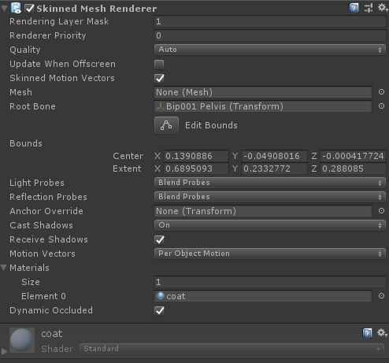
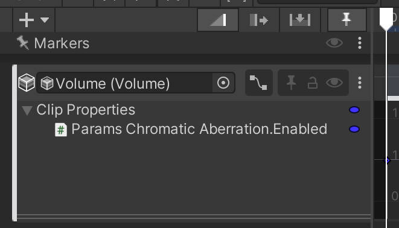
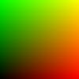

Unity Note
Table of Contents
- Scripts
- Scene
- Object
- GameObject
- Transform
- RectTransform
- Matrix4x4
- Quaternion Euler
- PlayerLoop
- MonoBehavior
- Resource
- Debug
- Animator Animation Avatar
- Attributes
- Ray
- Sprite SpriteAtlas
- Coroutine
- Dir File Path
- Camera
- Mesh MeshRenderer SkinnedMeshRenderer
- Timeline
- Lod LodGroup
- Materials
- Graphics
- Physics
- Assembly Definition
- Misc
- Editor
- Usages
- EditorExtension
- Update/Redraw GameView SceneView
- 菜单|右键命令
- 执行菜单命令
- Engine 命名空间下执行 Editor 命名空间下代码
- Inspector
- EditorWindow
- 自定义 ToolBar
- ScriptableObject
- SerializedObject
- Tools
- ModelImporter
- TextureImporter
- Misc
- Build
- Packages
- Usage
- Optimize
- Optimizing Graphics Performance
- Draw Call Batching
- Modeling characters for optimal performance
- Optimizing Shader Load Time
- Animation Optimize
- Occlusion culling
- Android Platform
- Unity Source Code
- Q&A
- 参考资料
该文章记录了翻译的 Unity 官方文档，以及学习过程中总结的文档
相关代码放在: https://github.com/wolfand11/StudyProjects/tree/master/SDK/Unity
<!– more –>
Scripts
Scene
SceneManager.SceneManager.GetActiveScene().GetRootGameObjects()不会返回被标记为不被销毁的对象。
Active Scene
从脚本中实例化的 GameObjects 被添加到激活的的场景。当前使用的 lighting settings 也是激活场景的 lighting settings。以 Additive 模式加载场景时，第一个场景为激活场景。使用下面接口可以切换激活场景。
https://docs.unity3d.com/ScriptReference/SceneManagement.SceneManager.SetActiveScene.html
SceneUtility.GetScenePathByBuildIndex
获取 BuildSettings 中场景名称列表
List<string> sceneNames = new List<string>(); for (int i = 0; i < SceneManager.sceneCountInBuildSettings; i++) { var scenePath = SceneUtility.GetScenePathByBuildIndex(i); sceneNames.Add(string.IsNullOrEmpty(scenePath) ? "null scene" : Path.GetFileNameWithoutExtension(scenePath)); }
https://docs.unity3d.com/ScriptReference/SceneManagement.SceneUtility.html
Scene-specific settings
Multipile Scenes
set up multiple scenes
下面列出的 Settings 都是每个场景一份的：
- RenderSettings
- LightmapSettings
- NavMesh settings
- Occlusion Culling 窗口中的 Scene settings
每个场景管理自己的 settings, 只有和该场景有关的 settings 才会被存储到该场景文件中。当你 active 一个新的 scene 时，unity 会用新的 scene 的 settings 代替前一个 scene 的 settings。
bake data in multiple scenes
- Bake lightmaps with multiple scenes
Shadows 和 GI 光弹射会跨多个场景，但是，lightmaps 和 RealtimeGI 数据的加载和卸载是每个场景分开的。这意味着，多个场景不共享 lightmaps，可以一起安全卸载场景和它的 lightmaps。多个场景共享 Light Probe 数据，所以，为多个场景烘培的 LightProbes 会被同时加载。
打开多个场景，执行烘培，会对所有场景进行烘培，所有场景的 lightmaps 都会放到当前激活场景对应的目录内。
- TODO Bake NavMesh data with multiple scenes
NavMesh 被放到 com.unity.ai.navigation packages 中了，需要安装该 package.
- Bake occlusion culling data with multiple scenes
打开多个场景，执行烘培，会对所有场景进行烘培，所有场景的遮挡剔除数据都会放到当前激活场景对应的目录内的 OcclusionCullingData.asset 文件中。OcclusionCullingData.asset 文件内容如下：
RenderSettings (UnityEngine)
RenderSettings in UnityEngine namespace.
skybox
public static Material skybox;
playmode 修改 skybox 材质后，需要调用 DynamicGI.UpdateEnvironment 来更新 ambient probe。
ambientMode
enum AmbientMode { Skybox, // Skybox-based or custom ambient lighting. Trilight, // Trilight ambient lighting. Flat, // Flat ambient lighting. Custom // Ambient lighting is defined by a custom cubemap. }
ambientProbe
public static Rendering.SphericalHarmonicsL2 ambientProbe;
defaultReflectionMode
enum DefaultReflectionMode { Skybox, // Skybox-based default reflection. Custom // Custom default reflection. }
LightmapSettings (UnityEngine)
LightmapSettings in UnityEngine namespace.
lightmaps
public static LightmapData[] lightmaps;
烘培场景时，会得到 LightmapData 数组 lightmaps。LightmapData 包含了 lightmapColor, lightmapDir, shadowMask。
对于某个 MeshRenderer 来说，lightmapIndex 属性指定了该 Mesh 使用 lightmaps 数组中第几个 LightmapData，lightmapScaleOffset 属性指定了采样 lightmap 贴图时，需要对 uv 坐标做的 offset 和 scale。
lightmapsMode
NonDirectional 没有方向信息，只使用一张 lightmap 存储光照亮度。
CombinedDirectional 方向光的方向信息和间接光的方向信息组合在一起，被编码到第二张 lightmap 中。
Lightmapping (UnityEditor)
LightingSetings in UnityEditor namespace.
LightingDataAsset
LightingDataAsset in UnityEditor namespace.
通过 Lightmapping.lightingDataAsset 来指定当前场景使用的 LightingDataAsset。
LightingSetings
LightingSetings in UnityEngine namespace.
通过 Lightmapping.lightingSettings 来指定 LightingSetings。
- bakedGI
对当前场景是否使用 BakedGlobalIllumination 系统。
该值设置为 false 时，运行时，unity 不会加载该场景的预计算光照数据，Baked Lights 和 MixedLights 会被当作 real-time Lights。
- realtimeGI
对当前场景是否使用 RealtimeGlobalIllumination 系统。
该值设置为 true 时，该场景使用 Enlighten Realtime Global Illumination 系统。
- realtimeEnvironmentLighting
该属性决定了，unity 将 environment lighting 存储到哪类 lightmap。
当场景中同时使用 BakedGlobalIllumination system 和 EnlightenRealtimeGlobalIllumination system 时，realtimeEnvironmentLighting 为 true，则 unity 将 environment lighting 存储到 real-time lightmaps 中，否则存储到 baked lightmaps 中。
- respectSceneVisibilityWhenBakingGI
该属性决定了，GameObject 的 Scene Visibility setting 是否会影响烘培。
- 参考资料
ReflectionProbe
defaultTexture
read only.
public static Texture defaultTexture;
defaultTextureHDRDecodeValues
read only.
public static Vector4 defaultTextureHDRDecodeValues;
Object
Object 中的几个静态方法。
| Name | 功能 |
|---|---|
| Destroy | 删除一个 游戏对象 或 组件 或 资源 . |
| DestroyImmediate | 立即删除对象. 强烈建议使用 Destroy 代替此方法. |
| DontDestroyOnLoad | 在加载一个新场景时，该对象不被自动销毁 |
| FindObjectOfType | 返回第一个被加载的 激活的 Type 类型的对象. |
| FindObjectsOfType | 返回所有被加载的 激活的 Type 类型的对象. |
| Instantiate | 克隆原始对象并返回克隆体. |
Destroy
- 调用 Destroy 后，会先调用被删除对象的 OnDisable 然后再调用 OnDestroy
- 如果 Object.Destroy(obj)中的 obj 为组件，会先将该组件从 GameObject 上移除，然后销毁该组件；如果 obj 为一个 GameObject，会删除该游戏对象、它的所有组件、以及它 transform 中记录的所有子节点。
- 调用 Destory 后，并不会立即销毁对象，会延迟到当前 Update 执行结束以后，但在渲染之前会销毁。
如果在 OnEnable 中调用 Destroy，会立即触发 OnDisable 方法，但是不会立即触发 OnDestroy 方法， 当前所有对象 的 OnEnable 执行结束后才调用 OnDestroy。
如果在 Start 中调用 Destroy，会立即触发 OnDisable 方法，但是不会立即触发 OnDestroy 方法， 当前所有对象 的 Start 执行结束后才调用 OnDestroy。
如果在 Update 中调用 Destory，会立即触发 OnDisable 方法，但是不会立即触发 OnDestroy 方法， 当前所有对象 的 Update 执行结束后才调用 OnDestroy。
如果在 LateUpdate 中调用 Destroy，会立即触发 OnDisable 方法，但是不会立即触发 OnDestroy 方法， 当前所有对象 的 LateUpdate 执行结束后才调用 OnDestroy。
如果在 OnPostRender 中调用 Destroy，会立即触发 OnDisable 方法，但是不会立即触发 OnDestroy 方法， 当前对象 的 OnPostRender 执行结束后才调用 OnDestroy。
DontDestroyOnLoad
DontDestroyOnLoad 只对场景中的 Root GameObjects 或他们上的组件有效。
创建一个空对象，然后对其调用 DontDestroyOnLoad 可以将该对象变为当前场景的 Root GameObject。
GameObject
GameObject.Find(string childName) 静态成员方法
- 需要注意的是该方法会循环查找整个场景树的节点(根节点和子节点都会查找)。找到第一个名称为 childName 的节点。
- 该方法会返回标记为不被销毁的对象。
- 该方法只返回被激活的对象，如果 gameObject 没有被激活，则不会返回。
GetComponent GetComponents
GameObject 定义的其他成员方法
| Name | 功能 |
|---|---|
| AddComponent | 添加一个类名称为 className 的组件到当前对象上. |
| BroadcastMessage | 调用当前对象以及其子对象上每个 MonoBehavior 上的名字单位 methodName 的方法 |
| CompareTag | 判断 gameObject 的 tag 与参数的 tag 相同 ? |
| GetComponent | 获取当前对象的指定类型的组件,不存在返回 null |
| GetComponentInChildren | 获取当前对象或其子对象的指定类型的组件，不存在返回 null（遍历行为是以深度为优先的） |
| GetComponentInParent | 获取当前对象或其父对象的指定类型的组件，不存在返回 null |
| GetComponents | 获取当前对象的所有组件 |
| GetComponentsInChildren | 获取当前对象或其子对象的指定类型的所有组件。 |
| GetComponentsInParent | 获取当前对象或其父对象的指定类型的所有组件。 |
| SendMessage | 调用当前对象上每个 MonoBehavior 上的名字为 methodName 的方法 |
| SendMessageUpwards | 调用当前对象以及其父对象上每个 MonoBehavior 上的名字单位 methodName 的方法 |
| SetActive | 激活/不激活 当前对象 |
Tips:
GetComponentInChildren(Type compType);
GetComponentsInChildren(Type compType);
GetComponentInParent(Type compType);
GetComponentsInParent(Type compType);
需要注意的是
1 上面 4 个方法会先在当前对象中寻找 CompType 类型的组件。
2 方面 4 个方法会循环查找所有子节点或父节点
GameObject 和 Transform
new 出来的 GameObject 对象会自带一个 Transform 组件
var obj = new GameObject(); if (obj.transform!=null) { Debug.Log("exist transform"); } else { Debug.Log("not exist"); } // 上面的代码会输出 exist transform
Get all DontDestroyOnLoad GameObjects
无论是编辑器版还是 App 版都无法通过下面代码获取所有的 DontDestroyOnLoad GameObject
private void DestroyDontDestroyOnLoadGameObjects() { // 提示无法找到 DontDestroyOnLoad 场景 var dontDestoyOnLoadScene = SceneManager.GetSceneByName("DontDestroyOnLoad"); var dontDestroyOnLoadGameObjects = dontDestoyOnLoadScene.GetRootGameObjects(); foreach (var dontdestroyGameObject in dontDestroyOnLoadGameObjects) { Destroy(gameObject); } }
在编辑器模式下可以使用如下代码来获取所有 DontDestroyOnLoad GameObject
public void DestroyAllDontDestroyOnLoadObjects() { var go = new GameObject("Sacrificial Lamb"); DontDestroyOnLoad(go); foreach(var root in go.scene.GetRootGameObjects()) Destroy(root); }
在 App 版中，可以使用如下方法
public static class DontDestroyOnLoadManager { static List<GameObject> _ddolObjects = new List<GameObject>(); public static void DontDestroyOnLoad(this GameObject go) { UnityEngine.Object.DontDestroyOnLoad(go); _ddolObjects.Add(go); } public static void DestroyAll() { foreach(var go in _ddolObjects) if(go != null) UnityEngine.Object.Destroy(go); _ddolObjects.Clear(); } }
Traverse Component
public class Utils { public static bool TraverseGObj(Func<GameObject, bool/* isBreak */> opt, bool includeInactive = false) { for (var sceneIdx = 0; sceneIdx < SceneManager.sceneCount; sceneIdx++) { var scene = SceneManager.GetSceneAt(sceneIdx); if (TraverseGObjInScene(scene, opt)) { return true; } } return false; } static List<Transform> __temp_transList = new List<Transform>(); public static bool TraverseGObjInScene(Scene scene, Func<GameObject, bool/* isBreak */> opt, bool includeInactive = false) { if (!scene.IsValid()) return false; var rootGObjs = scene.GetRootGameObjects(); foreach (var gobj in rootGObjs) { if(!includeInactive && !gobj.activeSelf) continue; // GetComponentsInChildren include gobj self gobj.GetComponentsInChildren<Transform>(includeInactive, __temp_transList); foreach (var trans in __temp_transList) { if (opt(trans.gameObject)) return true; } } return false; } public static bool TraverseComp<TComp>(Func<TComp, bool /*isBreak*/> opt, bool includeInactive = false) where TComp : class { TraverseGObj((gobj) => { var comps = gobj.GetComponents<TComp>(); var comp = gobj.GetComponent<TComp>(); return opt(comp); }, includeInactive); return false; } public static bool TraverseCompInScene<TComp>(Scene scene, Func<TComp, bool/* isBreak */> opt, bool includeInactive = false) where TComp : class { TraverseGObjInScene(scene, (gobj) => { var comp = gobj.GetComponent<TComp>(); return opt(comp); }, includeInactive); return false; } public static TComp Find<TComp>(bool includeInactive = false) where TComp : class { TComp retComp = null; TraverseComp<TComp>((comp) => { if (comp != null) { retComp = comp; return true; } return false; }); return retComp; } public static TComp FindInScene<TComp>(Scene scene, bool includeInactive = false) where TComp : class { TComp retComp = null; TraverseCompInScene<TComp>(scene,(comp) => { if (comp != null) { retComp = comp; return true; } return false; }, includeInactive); return retComp; } }
layer
Base
gameObject 只能在一个 layer 中，camera 通过使用 cullingMask 来有选择渲染场景物体。
int hideLayer = LayerMask.NameToLayer("Hide"); gObj.layer = hideLayer; // everthing layer LayerMask mask = ~0; // remove hideLayer from everthing layer mask &= ~(1<<hideLayer); camera.cullingMask = mask;
Transform
transform.Find(string childName)
- Find 方法不是递归查找子节点的，它只查询直接子节点(不会查找自己)。
- Find 方法可以传递子节点的相对路径 例如：“child1/child1_1”
- Find 方法可以返回没有被激活的子节点
transform.root
该方法返回 transform 的 Root 节点。
/* UIScene 中的结构如下 -Canvas --MainUI ---PlayerIcon PlayerIcon.transform.root 返回的是 Canvas */
设置节点关系
SetAsFirstSibling 将 transform 放置到本地 transform 列表最前。
SetAsLastSibling 将 transform 放置到本地 transform 列表最后。
SetParent 将 transfrom 设置为当前 transform 的父节点.
SetParent(parentTransform,worldPositionStays)
需要注意下面几点：
- 该方法为 Transform 对象的方法，GameObject 没有该方法
- 该方法的第一个参数必须为 Transform 对象，不能为 GameObject
- 该方法的第二个参数默认值为 True，表示对象世界坐标不变，此时对象的 localPosition、localScale、localEulerAngles 可能是会被改变
GetComponent(s) GetComponent(s)InChildren GetComponent(s)InParent
- Component 类和 GameObject 类都有 GetComponent 方法
NGUI 中有如下继承关系 UIWidget->UIBasicSprite->UISprite，如果 GameObject 上绑定的组件中只有 Transform、UISprite，那么 GetComponent<UIWidget>()可以返回其上的 UISprite 组件。
var widget = GetComponent<UIWidget>(); if ( widget != null ) { Debug.Log ( "从 UIImage 上获取 UIWidget 成功 --- " + widget.ToString ( ) ); } else { Debug.Log ( "从 UIImage 上获取 UIWidget 失败 " ); } // 上面的代码会输出： // 从 UIImage 上获取 UIWidget 成功 --- Sprite (UISprite)
遍历 GameObject 上的所有组件
// 下面两种效果是一样的 foreach (var t in gameObject.GetComponents(typeof(Component))) { Debug.Log (t.ToString( )); } foreach (var t in this.GetComponents<Component>( )) { Debug.Log (t.ToString( )); }
- GetComponentInChildren(Type t) GetComponentInParent(Type t) 只返回激活状态的 GameObject 上的组件
- GetComponentsInChildren(Type t, bool includeInactive=false) GetComponentsInParent(Type t, bool includeInactive=false) 该函数会返回自己
Vector2.Angle Vector2.SignedAngle
该函数只会返回正值
Vector2 originDir = new Vector2(0, 1); Vector2 targetDir = new Vector2(1, 0); Debug.Log("y->x " + Vector2.Angle(originDir, targetDir).ToString()); targetDir = new Vector2(-1, 0); Debug.Log("y->-x " + Vector2.Angle(originDir, targetDir).ToString()); targetDir = new Vector2(0, -1); Debug.Log("y->-y " + Vector2.Angle(originDir, targetDir).ToString()); // 下面是输出结果： // y->x 90 // y->-x 90 // y->-y 180 // 下面的代码是错误的 ERROR 应该使用 Vector2.SignedAngle 来获取正确的带符号的旋转角度 float rotation = Vector2.Angle(originDir,targetDir); if (targetDir.x < originDir.x) { rotation = -rotation; } //在 Unity 中 正的旋转度数表示 沿着旋转轴的方向看 是逆时针旋转，沿着旋转轴的反方向看 是 顺时针旋转。
transform.localEulerAngles
unity 为左手坐标系，所以旋转的正方向通过左手原则来定
transform.localEulerAngles.x 表示绕 x 轴旋转的角度
transform.localEulerAngles.y 表示绕 y 轴旋转的角度
transform.localEulerAngles.z 表示绕 z 轴旋转的角度
transform.localEulerAngles 与 transfrom.localRotation.eulerAngles
这个两个属性获得的值是相等的。
transform.LookAt
public void LookAt(Transform target, Vector3 worldUp = Vector3.up);
public void LookAt(Vector3 worldPosition, Vector3 worldUp = Vector3.up);
// 设置 gObj 朝向前方向上 30 度方向 Vector3 dir = new Vector3(Math.Cos(30*Math.PI/180),Math.Cin(30*Math.PI/180),0); gObj.transfrom.LookAt(Transform.TransformDirection(dir));
遍历子节点
遍历直接子节点
// 下面两种遍历方法是等价的 foreach(Transform trans in transform) { Debug.Log("---> " + trans.name); } // transform.childCount disabled 状态的子节点也包含在内 for(var i=0; i<transform.childCount; i++) { Debug.Log("---> " + transform.GetChild(i).name); }
遍历所有子节点
// 该方法会返回自己, 自己为第一个 foreach(var trans in GetComponentsInChildren<Transform>(true)) { Debug.Log("child = " + trans.name); }
RectTransform
请参考下面链接内容：
.UnityGUI.html#org933fe23
Matrix4x4
unity 中的矩阵是列主序的，采用矩阵左乘法。
Matrix4x4[row][column]
// unity c++ 层使用float 数组来表示矩阵 float m_Data[16]; // float 数组中矩阵以列主序存储, m12 表示 矩阵 1 行 2 列的元素 m_Data[0] // column0 - m00 m_Data[1] // column0 - m10 m_Data[2] // column0 - m20 m_Data[3] // column0 - m30 m_Data[4] // column1 - m01 m_Data[5] // column1 - m11 m_Data[6] // column1 - m21 m_Data[7] // column1 - m31 // 访问矩阵指定元素 Matrix4x4 mat; mat.m12 == mat[1][2] // 1 行 2 列的元素
Matrix4x4.TRS
Vector3 pos = new Vector3(10, 5, 20); // TRS 表示先缩放后旋转再位移 Vector3 newPos1 = Matrix4x4.TRS(new Vector3(5,10,-5), Quaternion.Euler(45,45,45), Vector3.one).MultiplyPoint(pos); Vector3 newPos2 = (Matrix4x4.Translate(new Vector3(5, 10, -5)) * Matrix4x4.Rotate(Quaternion.Euler(45, 45, 45))).MultiplyPoint(pos); Debug.Log("newPos1==newPos2 " + (newPos1==newPos2)); // 输出 True
将 Matrix4x4 分解为 Translate Rotation Scale 矩阵
Matrix4x4[] bparr = smr.sharedMesh.bindposes; Matrix4x4 l2p = bparr[testBoneParentIdx] * bparr[testBoneIdx].inverse; Matrix4x4 p2l = l2p.inverse; Matrix4x4 p2lS = Matrix4x4.Scale(p2l.lossyScale); Matrix4x4 p2lR = Matrix4x4.Rotate(p2l.rotation); Matrix4x4 p2lT = p2l * p2lS.inverse * p2lR.inverse;
Quaternion Euler
Quaternion 的结合性
// 先按照 a 旋转，然后按照 b 旋转，可以得到 c 表示的旋转 Quaternion c = a * b; Debug.Log("c = " + c.eulerAngles); // Quaternion 的乘积运算复合结合律 Quaternion d = a * b * c = a * (b * c);
欧拉角旋转
术语
- Yaw 偏航角，绕 Y 轴旋转
- Pitch 俯仰角，绕 X 轴旋转
- Roll 翻滚角，绕 Z 轴旋转
localEulerAngle
transform.localEulerAngle 返回的是 0-360 范围内的值。在执行旋转角度叠加时，为了支持负数角度，应该将角度范围转换到[-180,180]。
localEulerAngle 表示将父节点的坐标轴按照 先围绕父节点的坐标系的 z 轴旋转 localEulerAngle.z，然后绕父节点坐标系的 x 轴旋转 localEulerAngle.x，最后绕父节点坐标系的 y 轴旋转 localEulerAngle.y.
为什么修改 localEulerAngle.xyz 中的一个另外两个保持为 0 时，始终都是围绕本地对应坐标轴旋转？
当 localEulerAngle 的三个分量 x,y,z 中其中两个保持为 0，修改另外一个时，始终都是围绕父节点的对应坐标轴旋转，而此时本地坐标轴和父节点坐标轴是一致的，所以同时也围绕本地对应坐标轴旋转。
为什么修改 localEulerAngle.z 时，始终都是围绕本地 z 轴旋转？
当 localEulerAngle 的三个分量中 x,y 固定不变(其值可以为除 90 度以外的任意值)，修改 z 时，因为 x,y 固定不变，先绕父节点坐标系的 z 轴旋转 localEulerAngle.z 后，并不会改变本地坐标系中 z 的方向，随后绕父节点坐标系进行 x 轴方向和 y 轴方向的旋转值固定的话，本地坐标系的 z 轴方向变化是相同的。所以，保持 x，y 固定，修改 z，始终都是围绕本地 z 轴旋转。
旋转向量
Vector2 dir = new Vector2(1, 0); Debug.Log("old dir = " + dir); // 朝向 z 轴正方向观察时，逆时针旋转为正 dir = Quaternion.Euler(0, 0, 90) * dir; Debug.Log("new dir = " + dir); // old dir = (1,0) // new dir = (0,1)
旋转的差和叠加
Quaternion a = Quaternion.Euler(30, 30, 0); Quaternion b = Quaternion.Euler(10, 10, 30); // 旋转的叠加 // 先按照 a 旋转，然后按照 b 旋转，可以得到 c 表示的旋转 Quaternion c = a * b; Debug.Log("c = " + c.eulerAngles); // 旋转的差 // 先按 c 旋转，然后按照 b 表示的旋转的反向旋转，可以得到 a 表示的旋转 var tA = c * Quaternion.Inverse(b); // 错误的旋转差 var tB = c * Quaternion.Inverse(a); // 旋转的差 // 先按 a 表示的旋转的反向旋转，然后按照 c 旋转，可以得到 b 表示的旋转 var tB1 = Quaternion.Inverse(a) * c; Debug.Log("tA==a " + (tA == a)); // 输出 True Debug.Log("tB==b " + (tB == b)); // 输出 False Debug.Log("tB1==b " + (tB1 == b)); // 输出 True
本地旋转和全局旋转之间的转换 不同坐标系之间旋转的转换
// 将全局坐标系的旋转转化为本地坐标系旋转 // this will transform WorldRotation to Target's local space Quaternion LocalRotation = Quaternion.Inverse(Target.transform.rotation) * WorldRotation; // 将本地旋转转化为全局旋转 Quaternion WorldRot = Target.transform.rotation * LocalRot; // 下面是测试代码 transform 为 testNode1 和 testNode2 共同的父节点 Vector3 pos = new Vector3(10, 5, 20); testNode1 = (Transform)GGameObject.Find(transform, "GObj1", typeof(Transform), true); testNode1.localPosition = pos; testNode2 = (Transform)GGameObject.Find(transform, "GObj2", typeof(Transform), true); testNode2.localPosition = pos; testNode1.localRotation = Quaternion.Euler(15, 10, 40); testNode2.rotation = transform.rotation * Quaternion.Euler(15, 10, 40); Debug.Log("1 testNode1.rotation == testNode2.rotation " + (testNode1.rotation == testNode2.rotation)); // print True testNode1.rotation = transform.rotation * Quaternion.Euler(25, 20, 50); testNode2.localRotation = Quaternion.Inverse(transform.rotation) * testNode1.rotation; Debug.Log("2 testNode1.rotation == testNode2.rotation " + (testNode1.rotation == testNode2.rotation)); // print True testNode1.localRotation *= Quaternion.Euler(15, 10, 40); testNode2.rotation *= Quaternion.Euler(15, 10, 40); Debug.Log("3 testNode1.rotation == testNode2.rotation " + (testNode1.rotation == testNode2.rotation)); // print True
关于 localRotation 和 rotation：下面代码中为什么会输出 True？
该段代码是上面代码的一小部分，完整代码请参考 No description for this link
testNode1.localRotation *= Quaternion.Euler(15, 10, 40); testNode2.rotation *= Quaternion.Euler(15, 10, 40); Debug.Log("3 testNode1.rotation == testNode2.rotation " + (testNode1.rotation == testNode2.rotation)); // print True
绕父节点旋转
子节点的本地坐标系方向不变
var rot = Quaternion.Euler(0, 5 * Time.deltaTime, 0); transform.localPosition = rot * transform.localPosition;
子节点的本地坐标系做对应旋转
如果初始时，子节点 forward 方向指向父节点，则在旋转情况下，子节点 forward 方向也保持指向父节点
var rot = Quaternion.Euler(0, 5 * Time.deltaTime, 0); transform.localPosition = rot * transform.localPosition; transform.localRotation *= rot;
绕本地坐标轴旋转
var rot = Quaternion.AngleAxis(5 * Time.deltaTime, Vector3.up); transform.rotation *= rot; // transform.localRotation *= rot; 使用 localRotation 也可以
PlayerLoop
PlayerLoopSystem 组织方式
所有的 PlayerLoopSystem 保存在 s_currentLoop 中，它内部是一个 NativePlayerLoopSystem 的数组，大致如下：
a.列表头记录了所有 PlayerLoopSystem 的个数
b.每一个 PlayerLoopSystem 和它的 subSystem 存在一片连续的区域
c.PlayerLoopSystem 有它的处理逻辑(updateFunction)，并记录了它的 subSystem 的个数
d.subSystem 中只有处理逻辑

- PlayerLoop 简要流程 http://www.vmetu.com/blog/playerloopjian-yao-liu-cheng.html (阿里云盘 pdf)
参考文档
- LowLevel.PlayerLoop https://docs.unity3d.com/ScriptReference/LowLevel.PlayerLoop.html
- LowLevel.PlayerLoopSystem https://docs.unity3d.com/ScriptReference/LowLevel.PlayerLoopSystem.html
- UnityEngine PlayerLoop.EarlyUpdate https://docs.unity3d.com/ScriptReference/PlayerLoop.EarlyUpdate.html
- https://www.cnblogs.com/Jean90/p/16193938.html
MonoBehavior
各种函数函数触发时机
同一个对象上各函数触发顺序
调用顺序如下
OnValidate -> OnValidate-> Awake -> OnEnable -> Start -> FixedUpdate -> Update-> LateUpdate -> (OnPreRender -> OnPostRender -> OnRenderImage) -> OnDisable -> OnDestroy -> OnValidate
- 只有 Camera 下的脚本会触发 OnPreRender -> OnPostRender -> OnRenderImage
- 只有在编辑器模式下才会触发 OnValidate
- 不同摄像机下的脚本中 OnPreRender -> OnPostRender -> OnRenderImage 的触发是连续的，即 A 摄像机脚本中的 OnPreRender -> OnPostRender -> OnRenderImage 都触发完后，才触发 B 摄像机脚本中的这些方法。
Awake 比 标记为 RuntimeInitializeOnLoadMethod 的静态函数先调用
class Test:MonoBehavior { static Test() { // CLR 保证在类的其他操作之前运行静态构造方法。 Debug.Log("Static Constructor----------------------- "); } private void Awake() { Debug.Log("Awake ----------------------------------- "); } [RuntimeInitializeOnLoadMethod] static void Initialize() { Debug.Log("RuntimeInitializeOnLoadMethod ------------ "); } } // 上面的代码 先执行 Awake，后执行 Initialize
public class MonoBehaviourTest : MonoBehaviour { public static int counter = 1; // 脚本实例被加载时调用 // Awake is called when the script instance is being loaded. public void Awake () { GLogUtility.LogInfo (string.Format ("{0} Awake", counter++)); } // 当脚本为 enabled，在任何 Update 方法第一次调用之前，会调用 Start // Start is called on the frame when a script is enabled just before any of // the Update methods is called the first time. public void Start () { GLogUtility.LogInfo (string.Format ("{0} Start", counter++)); } // 重置默认值，将脚本组件删除，再添加时会调用 // Reset to default values. public void Reset () { GLogUtility.LogInfo (string.Format ("{0} Reset", counter++)); } // 当对象变为 enabled 或 active 时，调用 OnEnable //This function is called when the object becomes enabled and active. public void OnEnable () { GLogUtility.LogInfo (string.Format ("{0} OnEnable", counter++)); } // Monobehaviour 变为 Disabled 或 Inactive 时，会调用 OnDisable // This function is called when the behaviour becomes disabled () or inactive. public void OnDisable () { GLogUtility.LogInfo (string.Format ("{0} OnDisable", counter++)); } // MonoBehaviour 被销毁时会调用 OnDestroy // This function is called when the MonoBehaviour will be destroyed. public void OnDestroy () { GLogUtility.LogInfo (string.Format ("{0} OnDestroy", counter++)); } // 当脚本加载 或者 inspector 面板上的值被修改时会调用 OnValidate //This function is called when the script is loaded or a value is //changed in the inspector (Called in the editor only). public void OnValidate () { GLogUtility.LogInfo (string.Format ("{0} OnValidate", counter++)); } // OnPreRender is called before a camera starts rendering the scene. public void OnPreRender () { GLogUtility.LogInfo (string.Format ("{0} OnPreRender", counter++)); } // OnPostRender is called after a camera finished rendering the scene. public void OnPostRender () { GLogUtility.LogInfo (string.Format ("{0} OnPostRender", counter++)); } // OnRenderImage is called after all rendering is complete to render image. public void OnRenderImage (RenderTexture src, RenderTexture dest) { GLogUtility.LogInfo (string.Format ("{0} OnRenderImage", counter++)); } // 如果物体是可见的，每个摄像机触发一次 OnWillRenderObject 的调用 // OnWillRenderObject is called once for each camera if the object is visible. public void OnWillRenderObject () { GLogUtility.LogInfo (string.Format ("{0} OnWillRenderObject", counter++)); } // 当前的 collider/rigidbody 和另外的 collider/rigidbody 开始接触时，会调用 OnCollisionEnter // OnCollisionEnter is called when this collider/rigidbody has begun touching another // rigidbody/collider. public void OnCollisionEnter () { GLogUtility.LogInfo (string.Format ("{0} OnCollisionEnter", counter++)); } // 当前的 collider/rigidbody 和另外的 collider/rigidbody 停止接触时，会调用 OnCollisionExit // OnCollisionExit is called when this collider/rigidbody has stopped touching another // rigidbody/collider. public void OnCollisionExit () { GLogUtility.LogInfo (string.Format ("{0} OnCollisionExit", counter++)); } // 每一个和其他 collider/rigidbody 有接触的 collider/rigidbody 都会在每帧中触发 OnCollisionStay 的调用 // OnCollisionStay is called once per frame for every collider/rigidbody that is touching // rigidbody/collider. public void OnCollisionStay () { GLogUtility.LogInfo (string.Format ("{0} OnCollisionStay", counter++)); } public void OnTriggerEnter () { GLogUtility.LogInfo (string.Format ("{0} OnTriggerEnter", counter++)); } public void OnTriggerExit () { GLogUtility.LogInfo (string.Format ("{0} OnTriggerExit", counter++)); } public void OnTriggerStay () { GLogUtility.LogInfo (string.Format ("{0} OnTriggerStay", counter++)); } // 如果 MonoBehaviour 状态为 enabled，则以固定的帧率调用此函数 //This function is called every fixed framerate frame, if the MonoBehaviour is enabled. public void FixedUpdate () { GLogUtility.LogInfo (string.Format ("{0} FixedUpdate", counter++)); } // 如果 MonoBehaviour 状态为 enabled，则以固定的帧率调用此函数 // Update is called every frame, if the MonoBehaviour is enabled. public void Update () { GLogUtility.LogInfo (string.Format ("{0} Update", counter++)); } // 如果 MonoBehaviour 状态为 enabled，则以每帧都会调用此函数 // LateUpdate is called every frame, if the Behaviour is enabled. public void LateUpdate () { GLogUtility.LogInfo (string.Format ("{0} LateUpdate", counter++)); } }
不同对象各函数触发顺序
- Camera Awake/Enable/Update/LateUpdate 顺序按照 depth 越大越优先
- Camera 渲染顺序按照 depth 越小越优先，即 Camera depth 值小的先触发 OnPreRender -> OnPostRender -> OnRenderImage
- Camera Disable 和 Destroy 执行顺序没有什么规律
- 普通对象和 Camera 的事件触发顺序也没有什么规律
- 只有对象身上有 Mesh 时，才会触发 OnWillRenderObject
场景中有如下对象树，其各个对象的脚本中函数触发如下描述：
场景对象树： Cube2 Camera-depth1 Camera-depth0 Camera-depth2 Cube1 -->Cube1.1 对象函数触发顺序： // -------------------- Cube1.1 -Awake Cube1.1 -OnEnable Cube2 -Awake Cube2 -OnEnable Camera3 -Awake Camera3 -Enable Camera2 -Awake Camera2 -Enable Camera1 -Awake Camera1 -Enable Cube1 -Awake Cube1 -Enable // -------------------- Cube1.1 -Start Cube2 -Start Camera3 -Start Camera2 -Start Camera1 -Start Cube1 -Start // -------------------- Cube1.1 -Update Cube2 -Update Camera3 -Update Camera2 -Update Camera1 -Update Cube1 -Update // -------------------- Cube1.1 -LateUpdate Cube2 -LateUpdate Camera3 -LateUpdate Camera2 -LateUpdate Camera1 -LateUpdate Cube1 -LateUpdate // -------------------- Camera 渲染 Cube1 -OnWillRenderObject Cube2 -OnWillRenderObject Cube1.1 -OnWillRenderObject Camera1 -OnPreRender Camera1 -OnPostRender Camera1 -OnRenderImage Cube1 -OnWillRenderObject Cube2 -OnWillRenderObject Cube1.1 -OnWillRenderObject Camera2 -OnPreRender Camera2 -OnPostRender Camera2 -OnRenderImage Cube1 -OnWillRenderObject Cube2 -OnWillRenderObject Cube1.1 -OnWillRenderObject Camera3 -OnPreRender Camera3 -OnPostRender Camera3 -OnRenderImage // -------------------- Disable 以上节点的父节点 Cube2 -OnDisable Camera3 -OnDisable Camera1 -OnDisable Cube1.1 -OnDisable Cube1 -OnDisable Camera2 -OnDisable // -------------------- 编辑器停止运行 Cube2 -OnDisable Camera3 -OnDisable Camera1 -OnDisable Cube1.1 -OnDisable Cube1 -OnDisable Camera2 -OnDisable Cube2 -OnDestroy Camera3 -OnDestroy Camera1 -OnDestroy Cube1 -OnDestroy Cube1.1 -OnDestroy Camera2 -OnDestroy
单例 MonoBehavior
单例 MonoBehavior 被添加到多个 GameObject 上后，对于每个 GameObject，都分别实例化了一个 MonoBehavior 对象，这些对象和你自己实例化的单例不是同一个对象。
创建 MonoBehavior 单例是不被允许的，会提示下面错误:
You are trying to create a MonoBehaviour using the 'new' keyword. This is not allowed. MonoBehaviours can only be added using AddComponent(). Alternatively, your script can inherit from ScriptableObject or no base class at all
public 变量赋值顺序
public 变量的赋值顺序按照 初始化语句、构造函数、编辑器赋值的顺序。
public class Test:MonoBehaviour { public int value2 = 10; public Test () { Debug.Log ("Test value2 = " + value2.ToString ()); value2 = 11; } void Awake () { Debug.Log ("Awake value2 = " + value2.ToString ()); } void Start () { Debug.Log ("Start value2 = " + value2.ToString ()); } } // Output //Test value2 = 10 //构造函数中读的值为 初始化语句中赋的值 //Awake value2 = 120 //在编辑器中设置了 value2 的值为 120, 所以编辑器赋值在 Awake 之前执行的。 //Start value2 = 120
Resource
Load
需要注意以下两点
1 使用 Resource.Load 时，其中参数不能填写后缀名，否则返回 null.
2 通过 Resource.Load 返回的是 Prefab 本身，需要对其实例化才能使用。否则会报下面的错误
var obj = Resources.Load ("UI/Root_bg") as GameObject; obj.transform.SetParent(rootUI); // 上面代码会引发下面错误 // Setting the parent of a transform which resides in a prefab is disabled to prevent data corruption. // 正确的做法如下： // Instantiate 是 Object 的静态方法 var obj = Instantiate(Resources.Load("UI/Root_bg")) as GameObject; obj.transform.SetParent(rootUI);
Debug
可视化 Ray，Line
void Update() { Vector3 forward = transform.TransformDirection(Vector3.forward) * 10; // Debug 绘制射线 Debug.DrawRay(transform.position, forward, Color.green); // Debug 绘制线段 Debug.DrawLine(Vector3.zero, new Vector3(0, 5, 0), color); } void OnDrawGizmosSelected() { // Draws a 5 unit long red line in front of the object Gizmos.color = Color.red; Vector3 direction = transform.TransformDirection(Vector3.forward) * 5; Gizmos.DrawRay(transform.position, direction); }
可视化 Frustum
void OnDrawGizmosSelected() { Gizmos.color = Color.red; Vector3 direction = transform.TransformDirection(Vector3.forward) * 5; // Vector3 center, float fov, float maxRange, float minRange, float aspect Gizmos.DrawFrustum(transform.position, 30, 1000, 0.1, 2); }
Animator Animation Avatar
播放动画控制
循环播放动画
Animation
Normal Loop - 方案 1: 在 AnimationClip 级别上的实现 设置 AnimationClip 的 WrapMode=Loop 设置 Animation 的 WrapMode=Default - 方案 2: 在 Animation 级别上的实现 设置 Animation 的 WrapMode=Loop ClampForever - AnimationClip 的 WrapMode=ClampForever - Animation 的 WrapMode=ClampForever PingPong - AnimationClip 的 WrapMode=PingPong - 设置 Animation 的 WrapMode=PingPong
Animator
Normal Loop - 方案 1: 在 AnimationClip 级别上的实现 勾选 AnimationClip 的 Loop 选项 - 方案 2: 在 AnimationController 级别上的实现 在 AnimationController 中创建两个动画状态: LoopPartA LoopPartB,设置 LoopPartA 可以转换到 LoopPartB，LoopPartB 可以转换到 LoopPartA PingPong: 在 AnimationController 级别上的实现 在 AnimationController 中创建两个动画状态: LoopPartA LoopPartB,设置 LoopPartA 可以转换到 LoopPartB，LoopPartB 可以转换到 LoopPartA,设置 LoopPartB 的 speed=-1
暂停播放 恢复播放
void DoPauseOrResume() { if(animation!=null) { animation[animation.clip.name].speed = IsPause?0:1; } if(animator!=null) { // 方法 1 animator.speed = IsPause?0:1; // 方法 2 animator.SetFloat("InAnimSpeed", IsPause ? 0 : 1); } } // 播放完后停留在第一帧 // 播放完后停留在最后一帧
判断动画是否正在播放 判断动画是否播放完
animation.isPlaying
AnimationClip 为 ClampForever 时，播放完毕该值会一直为 True.
AnimationClip 为 Once Clamp 时，播放完毕该值会为 False.
Animator 中没有判断动画是否在播放的方法.
添加删除动画消息
bool IsExistEvent(AnimationClip clip, string funcName, float time) { foreach(var evt in clip.events) { if(evt.functionName == funcName) { if(Mathf.Abs(time - evt.time) < 0.0001f) { Debug.LogWarning("funcName exist! bug time not equal!"); } return true; } } return false; } bool AddEvent(AnimationClip clip, string funcName, float time=-1) { if(clip==null)return false; if(IsExistEvent())return false; if(time < 0) { // 通过 CrossFade 方式播放动画时，如果 time=clip.length 有时候会无法触发事件 time = clip.length * 0.95; } AnimationEvent evt = new AnimationEvent(); evt.time = time; evt.functionName = funcName; clip.AddEvent(evt); return true; }
Animation
Animator
从某个时间点开始播放动画
动画的整体流程是怎样的？Skinning 是发生在什么时候？
使用 Unity 的 Profiler 工具，添加 CPU Profiler，进行 Profile，然后分析 Timeline 数据，可以看到 Unity 内部函数的调用先后顺序，从而大体上了解 Unity 一帧的执行流程。
表情动画实现
BaseLayer 设置如下：
Mask 设置为空, Blending 类型设置为 Override
NewLayer 设置如下
Mask 设置为 Face(只包含脸部骨架)，Blending 类型设置为 Override，Weight 设置为 1

具体实现可以参考 BaiduYun/UnitySample/ExpAnim
动画中 Rig/Root Node 和 Animation/Motion/RootMotionNode 的差别
通常情况下是逻辑控制角色的 TRS 属性，使用 RootMotion 时，动画会将 RootNode 的 TRS 变化应用到播放动画的节点上，从而实现动画对角色的控制。
Rig/Root Node 用于指定 Generic 模型的 Body Transform，Humanoid 模型的 Body Transform 是在 Avatar Configure 中指定的 Hips 骨骼。
Animation/Motion/RootMotionNode 用于指定特定动画对应的 Root Motion Node，播放该动画时，会完全使用选择的 Root Motion Node 来驱动播放动画的 GameObject。
参考资料
- UE4 官方文档 https://docs.unrealengine.com/en-US/Engine/Animation/RootMotion
- Unity RootMotion 使用 https://www.cnblogs.com/wantnon/p/5163513.html
Animator Humanoid 是如何支持不同体型角色复用同一套动画的？
通过将动画中 Translation 数据按照当前体型相对于目标体型的比例进行调整，使目标体型的动画数据适配当前体型。
- 参考资料
- AnimationRetargeting https://docs.unrealengine.com/en-us/Engine/Animation/AnimationRetargeting
- unity 人物动画 retarget 的原理是什么？https://www.zhihu.com/question/274681700
- 动画重定向技术分析和 Unity 中的应用 https://zhuanlan.zhihu.com/p/25064011
- AnimationRetargeting https://docs.unrealengine.com/en-us/Engine/Animation/AnimationRetargeting
Animator Humanoid 如何支持飘带动画？
- 飘带使用动态骨骼
- 动画中包含飘带骨骼的运动，导出动画时，在 FBX 导出设置的 Animation 页签下，找到 Mask 选项，勾选飘带骨骼。
Avatar 里面存储的是什么数据？Avatar 的作用是 什么？
Avatar 中存储的数据
Generic Avatar
Avatar:
m_ObjectHideFlags: 0
m_CorrespondingSourceObject: {fileID: 0}
m_PrefabInternal: {fileID: 0}
m_Name: PlayerGenericAnim_NoRootNodeAvatar
m_AvatarSize: 9792
m_Avatar:
serializedVersion: 3
m_AvatarSkeleton:
data:
m_Node:
- m_ParentId: -1
m_AxesId: -1
- m_ParentId: 0
m_AxesId: -1
- m_ParentId: 1
m_AxesId: -1
- m_ParentId: 2
m_AxesId: -1
m_ID: 00000000b0cb522ca666a49d79f5e13c63c4d454c9983e579e89c8e43677d6de9a2c2e6f9207f2632d7addf3a41ba001a586d7967f516add3812f92c262c9423432ebc5f097add4c8197798b459022cac83a8868ab5baba337a35e9e88079bfe568a31afc0380a324b6cb836ffdd9551ef115b2850b59e485eeec5395df248ba4637954a63600609ba080a443998467c5451bdef72a02807698357be583769700edfbb612376e2c5729650465d990bf079c5d899eff5e72f832d0c65fed3f5971f619a8d62ac7a8bdf8b626d4d6299f671960b229824bf0e1b0ae718d2adc1fec574695e8267cc232f673cabb90bfa38ee4ac5d4a4f17a07a6fe57a523cead5b99bcfa9dff8de59709d7a2f79e698136d5783bd2abc512cd79df0284e6c6ea20f7c5c70da0ecb5319ffe025b47db9387c810bdcc116ed7ded748ea20e54261cc1aa75a776c0aa0c7d14faa8086f21874
m_AxesArray: []
m_AvatarSkeletonPose:
data:
m_X:
- t: {x: 0, y: 0, z: 0}
q: {x: 0, y: 0, z: 0, w: 1}
s: {x: 1, y: 1, z: 1}
- t: {x: -0, y: 0, z: 0}
q: {x: 0, y: -0, z: -0, w: 1}
s: {x: 1, y: 1, z: 1}
m_DefaultPose:
data:
m_X:
- t: {x: 0, y: 0, z: 0}
q: {x: 0, y: 0, z: 0, w: 1}
s: {x: 1, y: 1, z: 1}
- t: {x: -0, y: 0, z: 0}
q: {x: 0, y: -0, z: -0, w: 1}
s: {x: 1, y: 1, z: 1}
m_SkeletonNameIDArray: 00000000b0cb522c1106d1decbc10e53b39c853a6d792380a259c107fff3a501a1ae1eb7020e9581e2a1a2517d6fcb3089155abda9f141bce590ce7c58e6a124a8b78ea76073fd7b6a0e4b735a340b1c68cd8f97e6af46532da6fd019202386107aeef228687eb2e0dd3592ae5d836ce904ba6d52fef63b5873e58314256616c17134bc7e54706f627f7b36baaa15772304df975cfbe299875ef2001e3df2776b3c1bafe0990b3679fa0b41072574445c8064ddc5e364aabc535f6db7f64ff42e954f835dfb27b1465e3728df3d375faa860462dda0a83eb803ab9896cf375b6ace1f47816b0fde18080fa96d09e671e6acf6e87fcff69f0cfba1f9175eb1608e3db117fcf4840d37519494ae3294e3dbceda6f406bcaf6d908ca81a91127f75fc093d862c36149b11d48f05f083611701f40d06708898584d6a03c6e54261cc7ee7f03e914d07cc2c080d8b488a2b30
m_Human:
data:
serializedVersion: 2
m_RootX:
t: {x: 0, y: 0, z: 0}
q: {x: 0, y: 0, z: 0, w: 1}
s: {x: 1, y: 1, z: 1}
m_Skeleton:
data:
m_Node: []
m_ID:
m_AxesArray: []
m_SkeletonPose:
data:
m_X: []
m_LeftHand:
data:
m_HandBoneIndex: ffffffffffffffffffffffffffffffffffffffffffffffffffffffffffffffffffffffffffffffffffffffffffffffffffffffffffffffffffffffff
m_RightHand:
data:
m_HandBoneIndex: ffffffffffffffffffffffffffffffffffffffffffffffffffffffffffffffffffffffffffffffffffffffffffffffffffffffffffffffffffffffff
m_HumanBoneIndex: ffffffffffffffffffffffffffffffffffffffffffffffffffffffffffffffffffffffffffffffffffffffffffffffffffffffffffffffffffffffffffffffffffffffffffffffffffffffffffffffffffffffffffffffffffffffffffffffffffffffff
m_HumanBoneMass:
- 0.14545456
- 0.12121213
- 0.12121213
m_Scale: 1
m_ArmTwist: 0.5
m_ForeArmTwist: 0.5
m_UpperLegTwist: 0.5
m_LegTwist: 0.5
m_ArmStretch: 0.05
m_LegStretch: 0.05
m_FeetSpacing: 0
m_HasLeftHand: 0
m_HasRightHand: 0
m_HasTDoF: 0
m_HumanSkeletonIndexArray:
m_HumanSkeletonReverseIndexArray:
m_RootMotionBoneIndex: -1
m_RootMotionBoneX:
t: {x: 0, y: 0, z: 0}
q: {x: 0, y: 0, z: 0, w: 1}
s: {x: 1, y: 1, z: 1}
m_RootMotionSkeleton:
data:
m_Node: []
m_ID:
m_AxesArray: []
m_RootMotionSkeletonPose:
data:
m_X: []
m_RootMotionSkeletonIndexArray:
m_TOS:
0:
27270052: Reference/Hips/Spine/Chest/Neck/Head/Jaw
120103026: Reference/Hips/Spine/Chest/RightShoulder/RightArm/RightForeArm/RightHand/RightHandThumb1
Humanoid Avatar
Avatar:
m_ObjectHideFlags: 0
m_CorrespondingSourceObject: {fileID: 0}
m_PrefabInternal: {fileID: 0}
m_Name: PlayerAvatarHumanoidAvatar
m_AvatarSize: 19412
m_Avatar:
serializedVersion: 3
m_AvatarSkeleton:
data:
m_Node:
- m_ParentId: -1
m_AxesId: -1
- m_ParentId: 0
m_AxesId: -1
- m_ParentId: 1
m_AxesId: -1
- m_ParentId: 2
m_AxesId: -1
m_ID: 00000000b0cb522ca666a49d79f5e13c63c4d454c9983e579e89c8e43677d6de9a2c2e6f9207f2632d7addf3a41ba001a586d7967f516add3812f92c262c9423432ebc5f097add4c8197798b459022cac83a8868ab5baba337a35e9e88079bfe568a31afc0380a324b6cb836ffdd9551ef115b2850b59e485eeec5395df248ba4637954a63600609ba080a443998467c5451bdef72a02807698357be583769700edfbb612376e2c5729650465d990bf079c5d899eff5e72f832d0c65fed3f5971f619a8d62ac7a8bdf8b626d4d6299f671960b229824bf0e1b0ae718d2adc1fec574695e8267cc232f673cabb90bfa38ee4ac5d4a4f17a07a6fe57a523cead5b99bcfa9dff8de59709d7a2f79e698136d5783bd2abc512cd79df0284e6c6ea20f7c5c70da0ecb5319ffe025b47db9387c810bdcc116ed7ded748ea20e54261cc1aa75a776c0aa0c7d14faa8086f21874
m_AxesArray: []
m_AvatarSkeletonPose:
data:
m_X:
- t: {x: 0, y: 0, z: 0}
q: {x: 0, y: 0, z: 0, w: 1}
s: {x: 1, y: 1, z: 1}
- t: {x: -0, y: 0, z: 0}
q: {x: 0, y: -0, z: -0, w: 1}
s: {x: 1, y: 1, z: 1}
m_DefaultPose:
data:
m_X:
- t: {x: 0, y: 0, z: 0}
q: {x: 0, y: 0, z: 0, w: 1}
s: {x: 1, y: 1, z: 1}
- t: {x: -0, y: 0, z: 0}
q: {x: 0, y: -0, z: -0, w: 1}
s: {x: 1, y: 1, z: 1}
m_SkeletonNameIDArray: 00000000b0cb522c1106d1decbc10e53b39c853a6d792380a259c107fff3a501a1ae1eb7020e9581e2a1a2517d6fcb3089155abda9f141bce590ce7c58e6a124a8b78ea76073fd7b6a0e4b735a340b1c68cd8f97e6af46532da6fd019202386107aeef228687eb2e0dd3592ae5d836ce904ba6d52fef63b5873e58314256616c17134bc7e54706f627f7b36baaa15772304df975cfbe299875ef2001e3df2776b3c1bafe0990b3679fa0b41072574445c8064ddc5e364aabc535f6db7f64ff42e954f835dfb27b1465e3728df3d375faa860462dda0a83eb803ab9896cf375b6ace1f47816b0fde18080fa96d09e671e6acf6e87fcff69f0cfba1f9175eb1608e3db117fcf4840d37519494ae3294e3dbceda6f406bcaf6d908ca81a91127f75fc093d862c36149b11d48f05f083611701f40d06708898584d6a03c6e54261cc7ee7f03e914d07cc2c080d8b488a2b30
m_Human:
data:
serializedVersion: 2
m_RootX:
t: {x: 0.0023189595, y: 1.0396271, z: 0.010832548}
q: {x: 0.009703442, y: 0.00000043533007, z: -0.00004358088, w: 0.9999529}
s: {x: 1, y: 1, z: 1}
m_Skeleton:
data:
m_Node:
- m_ParentId: -1
m_AxesId: -1
- m_ParentId: 0
m_AxesId: 0
- m_ParentId: 1
m_AxesId: 1
- m_ParentId: 2
m_AxesId: 2
m_ID: b0cb522ca666a49d79f5e13c63c4d454c9983e579e89c8e43677d6de9207f263a41ba00163600609ba080a443998467c5451bdef72a02807698357be583769700edfbb612376e2c5729650465d990bf079c5d899eff5e72f832d0c65fed3f5971f619a8d62ac7a8bdf8b626d4d6299f671960b229824bf0e1b0ae718d2adc1fec574695e8267cc232f673cabb90bfa38ee4ac5d4a4f17a07a6fe57a523cead5b99bcfa9dff8de59709d7a2f79e698136d5783bd2abc512cd79df0284e6c6ea20f7c5c70da0ecb5319ffe025b47db9387c810bdcc116ed7ded748ea20
m_AxesArray:
- m_PreQ: {x: -0.4559346, y: -0.5404846, z: 0.4559346, w: 0.5404846}
m_PostQ: {x: -0.4559346, y: -0.5404846, z: 0.4559346, w: 0.5404846}
m_Sgn: {x: 1, y: 1, z: 1}
m_Limit:
m_Min: {x: -0.6981317, y: -0.6981317, z: -0.6981317}
m_Max: {x: 0.6981317, y: 0.6981317, z: 0.6981317}
m_Length: 0.09360148
m_Type: 1
- m_PreQ: {x: -0.46550134, y: -0.5322674, z: 0.46550134, w: 0.53226733}
m_PostQ: {x: -0.46550134, y: -0.5322674, z: 0.46550134, w: 0.53226733}
m_Sgn: {x: 1, y: 1, z: 1}
m_Limit:
m_Min: {x: -0.6981317, y: -0.6981317, z: -0.6981317}
m_Max: {x: 0.6981317, y: 0.6981317, z: 0.6981317}
m_Length: 0.16400246
m_Type: 1
m_SkeletonPose:
data:
m_X:
- t: {x: 0, y: 0, z: 0}
q: {x: 0, y: 0, z: 0, w: 1}
s: {x: 1, y: 1, z: 1}
- t: {x: 0, y: 0.9782809, z: 0}
q: {x: -0.0000000026830091, y: 0.000000005820766, z: 3.6379788e-10,
w: 1}
s: {x: 1.0000002, y: 1, z: 1.0000002}
m_LeftHand:
data:
m_HandBoneIndex: 200000002100000022000000230000002400000025000000260000002700000028000000290000002a0000002b0000002c0000002d0000002e000000
m_RightHand:
data:
m_HandBoneIndex: 0d0000000e0000000f000000100000001100000012000000130000001400000015000000160000001700000018000000190000001a0000001b000000
m_HumanBoneIndex: 01000000330000002f000000340000003000000035000000310000000200000003000000ffffffff04000000050000001c000000090000001d0000000a0000001e0000000b0000001f0000000c0000003600000032000000060000000700000008000000
m_HumanBoneMass:
- 0.14545456
- 0.12121213
- 0.12121213
m_Scale: 1.0396271
m_ArmTwist: 0.5
m_ForeArmTwist: 0.5
m_UpperLegTwist: 0.5
m_LegTwist: 0.5
m_ArmStretch: 0.05
m_LegStretch: 0.05
m_FeetSpacing: 0
m_HasLeftHand: 1
m_HasRightHand: 1
m_HasTDoF: 0
m_HumanSkeletonIndexArray: 01000000020000000300000004000000050000000600000007000000090000000b0000002100000022000000230000002400000025000000260000002700000028000000290000002a0000002b0000002c0000002d0000002e0000002f000000300000003100000032000000330000003400000035000000360000003700000038000000390000003a0000003b0000003c0000003d0000003e0000003f000000400000004100000042000000430000004400000045000000460000004700000048000000490000004a0000004b0000004c0000004d0000004e000000
m_HumanSkeletonReverseIndexArray: ffffffff00000000010000000200000003000000040000000500000006000000ffffffff07000000ffffffff08000000ffffffffffffffffffffffffffffffffffffffffffffffffffffffffffffffffffffffffffffffffffffffffffffffffffffffffffffffffffffffffffffffffffffffffffffffffffffffffffffffffffffffff090000000a0000000b0000000c0000000d0000000e0000000f000000100000001100000012000000130000001400000015000000160000001700000018000000190000001a0000001b0000001c0000001d0000001e0000001f000000200000002100000022000000230000002400000025000000260000002700000028000000290000002a0000002b0000002c0000002d0000002e0000002f00000030000000310000003200000033000000340000003500000036000000ffffffffffffffffffffffffffffffffffffffff
m_RootMotionBoneIndex: -1
m_RootMotionBoneX:
t: {x: 0, y: 0, z: 0}
q: {x: 0, y: 0, z: 0, w: 1}
s: {x: 1, y: 1, z: 1}
m_RootMotionSkeleton:
data:
m_Node: []
m_ID:
m_AxesArray: []
m_RootMotionSkeletonPose:
data:
m_X: []
m_RootMotionSkeletonIndexArray:
m_TOS:
0:
27270052: Reference/Hips/Spine/Chest/Neck/Head/Jaw
120103026: Reference/Hips/Spine/Chest/RightShoulder/RightArm/RightForeArm/RightHand/RightHandThumb1
Avatar Rigging Skinning 术语
- Avatar 将一套骨架重定向到另一套骨架的接口
- Rigging 为 Mesh 创建骨骼关节的骨架层级结构的过程
- Skinning 绑定骨骼关节到角色模型的过程
- https://docs.unity3d.com/Manual/AnimationGlossary.html
Generic Avatar
人形模型是一种非常特殊的结构，他包含至少 15 个按照特定方式组织的骨骼，这大致符合一个真实人类的骨架。其他类型的模型属于非人形，非人形模型之间骨骼结构有非常大的差异。Unity 解决非人形模型复杂性的方式是只需要知道骨架的根节点,这个骨骼类似于人形角色的质心。Generic Avatar 只需要映射一个骨骼，因此不需要 Humanoid Avatar 那样复杂的配置流程。
Root Node
Root Node 相当于 Humanoid 中的 Body Transform
因为 Generic 动画的骨骼结构可以是任意的。所以需要指定哪个骨骼是根节点。根节点允许 Unity 在多个 AnimationClip 之间建立一致性，并且在没有“就地”创作的动画之间正确混合（也就是说，整个模型在动画时移动其世界位置）。
指定根节点有助于 Unity 确定骨骼相对于彼此的移动以及世界中根节点的运动。
- 不指定 Root Node，Root Motion 动画不会起作用
- 指定了错误的 Root Node，Root Motion 动画的效果是错误的
Humanoid Avatar
Body Transform
Body Transform 是角色的质心。其被用于 Mecanim 的重定向引擎来提供稳定的模型位移。Body Orientation 是身体下部和上部相对于 Avatar T-Pose 朝向的平均值。Body Transform 和 Orientation 被存储在 Animation Clip 中。他们是存储在 AnimationClip 中的唯一世界空间曲线，其他的肌肉曲线和 IK 目标(手和脚)都是相对于 body transform 存储的。
Root Motion Node
- 不指定 Root Motion Node，Root Motion 动画是错误的，播放动画的 GameObject 的位置会和 Root Transform 位置重合
- 指定了错误的根节点，Root Motion 动画也是错误的，如果选择的根运动节点没有动画，则角色播放动画后会回到原始位置
指定了 Root Motion Node 后，Root Transform Rotation/Root Transform Position(Y/XZ) 选项会消失，动画本身的效果没有什么问题，播放动画的 GameObject 的位置会和 RootMotionNode 节点位置重合。
参考资料
- Root Motion-how it works https://docs.unity3d.com/Manual/RootMotion.html
- Unity 动画系统的 RootMotion https://zhuanlan.zhihu.com/p/44714595
AnimatorState.WriteDefaults
官网描述：对于没有做动画的属性，AnimatorState 是否使用默认值来写入该属性。
WriteDefaults 的工作方式如下：
- 当 Animator 初始化的时候，会遍历 AnimatorController 上的所有 clips，收集所有 clips 中做动画的属性，并且从场景中搜集这些属性的当前值，将当前值保存为 Default 值(默认值)。
- 当播放一个 WriteDefaults 属性设置为 True 的 state 时, 如果当前状态没有对某个属性做动画，则使用 Default 值(默认值)来设置该属性。
https://forum.unity.com/threads/write-defaults-confusion-bug.392058/
https://blog.csdn.net/rickshaozhiheng/article/details/77838379
https://docs.unity3d.com/ScriptReference/Animations.AnimatorState-writeDefaultValues.html
参考文档
Unity-Animator 学习文档 http://www.cnblogs.com/hont/p/5097407.html
Attributes
RuntimeInitializeOnLoadMethod
设置了[RuntimeInitializeOnLoadMethod]属性的静态函数，在场景加载完成后会被调用(Awake 消息触发之后调用)。
不同文件中的[RuntimeInitializeOnLoadMethod]属性的静态函数调用顺序是不确定的。
Inspector Attributes
Range
[Range(0.0f,1.0f)] public float speedFactor; [Range(1,5)] public float blurStopTime = 3.0f;
float int 类型的属性标记了 Range 属性后，Inspector 上就会变为 slider。
Min
[Min(0.1f)] public float speed;
字段序列化和显示
Unity 会自动为 Public 变量做序列化，序列化的意思是说再次读取 Unity 时序列化的变量是有值的，不需要你再次去赋值，因为它已经被保存下来。
什么样的值会被显示在面板上？已经被序列化，但是没有用 HideInInspector 标记的值。
[HideInInspector]表示将原本显示在面板上的序列化值隐藏起来。
[SerializeField]表示将原本不会被序列化的私有变量和保护变量可以序列化，这么他们在下次读取时，就是你上次赋值的值。
http://blog.sina.com.cn/s/blog_697b1b8c0102uxvn.html
如果 a 是公有的序列化变量。
- 如果你想要在面板中看到 a，那么用：
public int a;
- 如果你不想在面板中看到 a，那么用:
[HideInInspector] public int a; // 这样 a 可以在程序中被代码赋值，但不会在面板中看到并手动设置赋值。
- 如果你想要在面板中看到 a，那么用：
如果 a 是私有的序列化变量，你想在面板中读取并保存，那么用:
[SerializeField] private int a;
如果 a 是私有的序列化变量，你想在面板中读取，但是不保存，那么用：
[HideInInspector] [SerializedField] private int a; public int b { get{ return a; } } //然后在 Editor 中修改显示 EditorGUILayout.LabelField("value",game.B.ToString());
如果 a 是私有序列化变量，你不想在面板中做任何操作(不想看到，也不想写)，但是想要在程序中给它赋值，那么用。
[HideInInspector] [SerializedField] private int a; public int b{ get { return a; } set { a = value; } }
如果 a 需要被外部访问，但是不需要被序列化
private int _a; public int a{ get { return a; } set { a = value; } }
添加 Reset 操作
public class Sample : MonoBehaviour { [ContextMenuItem("Reset", "ResetName")] public string name = "Default"; void ResetName() { name = "Default"; } }
添加 Header 添加空格
可以通过 Header 性质，来将多个属性分组
public class AttributeOperation: MonoBehaviour { [Header("颜色属性组")] [ColorUsage(false, true, 1, 1, 1, 1)] public Color color1; [ColorUsage(false, true, 1, 0, 0, 1)] public Color color2; [ColorUsage(false, true, 0, 1, 0, 1)] public Color color3; [Space(10)]//上下属性之间隔了 10 个空位 [Header("其他属性组")] public int i; }
颜色选择
public class AttributeOperation: MonoBehaviour { [Header("颜色面板")] [ColorUsage(false, true, 1, 1, 1, 1)] public Color color; }
指定依赖某个组件
// 指定 GFancyList 组件依赖 ScrollPositionController [RequireComponent(typeof(ScrollPositionController))] public class GFancyList
System.Serializable
指定自定义的 class 或 struct 可以被序列化。
[System.Serializable] public class WidgetSlotInfo { public string widgetSlotName; public List<string> widgetNameList; }
自定义属性显示名字
// Assets\Scenes\CustomVarNameAttribute.cs using System.Collections; using System.Collections.Generic; using UnityEngine; public class CustomVarNameAttribute: PropertyAttribute { public string name; public bool showVarName; public CustomVarNameAttribute(string name, bool showVarName=false) { this.name = name; this.showVarName = showVarName; } } // Assets\Scenes\Editor\CustomVarNameDrawer.cs using System.Collections; using System.Collections.Generic; using UnityEngine; using UnityEditor; [CustomPropertyDrawer(typeof(CustomVarNameAttribute))] public class CustomVarNameDrawer : PropertyDrawer { GUIContent _label = null; public override void OnGUI(Rect position, SerializedProperty property, GUIContent label) { if(_label == null) { var attri = attribute as CustomVarNameAttribute; string name = string.Empty; if(attri.showVarName) { name = string.Format("{0} [{1}]", attri.name , property.name); } else { name = attri.name; } _label = new GUIContent(name); } EditorGUI.PropertyField(position, property, _label); } } // using UnityEngine; public class Test : MonoBehaviour { [CustomVarNameAttribute("测试")] public int test; [CustomVarNameAttribute("测试", true)] public int testName; }
自定义属性只读
// using UnityEngine; public class CustomVarReadOnlyAttribute : PropertyAttribute { } // using UnityEditor; using UnityEngine; [CustomPropertyDrawer(typeof(CustomVarReadOnlyAttribute))] public class CustomVarReadOnlyDrawer : PropertyDrawer { public override float GetPropertyHeight(SerializedProperty property, GUIContent label) { return EditorGUI.GetPropertyHeight(property, label, true); } public override void OnGUI(Rect position, SerializedProperty property, GUIContent label) { var originEnalbe = GUI.enabled; GUI.enabled = false; EditorGUI.PropertyField(position, property, label, true); GUI.enabled = originEnalbe; } } // using UnityEngine; public class Test : MonoBehaviour { [CustomVarReadOnly] public int i = 0; [CustomVarReadOnly] public Vector3 t; }
NaughtyAttribute
NaughtyAttribute 是一个开源的 Unity 插件，其提供了很多扩展的 Attribute。
安装方法：
在 manifest.json 文件中添加如下内容：
"com.dbrizov.naughtyattributes": "https://github.com/dbrizov/NaughtyAttributes.git#upm"
- NaughtyAttribute 文档 https://dbrizov.github.io/na-docs/index.html
参考资料
- TooltipAttribute https://docs.unity3d.com/2021.3/Documentation/ScriptReference/TooltipAttribute.html
- Unity3D Attributes 用法小结 http://blog.csdn.net/qq_24642743/article/details/75092091
- Unity 特性（Attribute）总览 https://gameinstitute.qq.com/community/detail/121123
Ray
Ray 是一个结构体
public struct Ray { Vector3 origin; // 射线发出的原点 Vector3 direction; // 射线发出的方向 }
使用射线来实现拾取物体
// GameView 中射线检测 // 从 main 摄像机所在位置发出一条指向鼠标位置的射线 ray = Camera.main.ScreenPointToRay(Input.mousePosition); if (Input.GetMouseButtonDown(0)) { RaycastHit hit; //如果射线碰撞到对象，把返回信息储存到 hit 中 if (Physics.Raycast(ray, out hit)) { //如果碰撞的对象是 Cube，则销毁它 if (hit.transform.gameObject.name == "Cube") { Destroy(hit.transform.gameObject); } } } // 编辑器 SceneView中的射线检测 SceneView.onSceneGUIDelegate += OnSceneGUI; void OnSceneGUI(SceneView sceneView) { if (Event.current.button == 1 && Event.current.type == EventType.MouseDown) { Ray ray = HandleUtility.GUIPointToWorldRay(Event.current.mousePosition); //Ray ray = sceneView.camera.ScreenPointToRay(Event.current.mousePosition); var hits = Physics.RaycastAll(ray); foreach (var hit in hits) { if (hit.transform.tag == selectedTag) { Selection.activeGameObject = hit.transform.gameObject; break; } } } }
Sprite SpriteAtlas
Sprite.textureRect Sprite.textureRectOffset
- Sprite.textureRect 表示图集中小图占据的矩形区域
- Sprite.textureRectOffset 表示图集中小图占据的矩形区域相对于未打包之前单图时占据的矩形区域的位置偏移。
例如： 假设原始的小图片 T_Lip_001.png 为 256x256, 将 T_Lip_001.png 添加到 SpriteAtlas CharPartTexAtlas 中后，CharPartTexAtlas 图集的大小为 256x256，T_Lip_001.png sprite.textureRect=(0.05,120.08,184.91,55.90)，这表示 T_Lip_001.png 在 CharPartTexAtlas 图集中占据的矩形区域。对应的 sprite.textureRectOffset=(36.1,87.1)，这表示 T_Lip_001.png 打包到大图后，其占据的矩形区域，相对于原来单图时矩形区域的偏移量。
Coroutine
MonoBehaviour 的 Start 方法可以为 Coroutine。(Awake OnEnable OnDisable 都不可以是 Coroutine)
- Some Coroutine Example https://docs.unity3d.com/ScriptReference/MonoBehaviour.StartCoroutine.html
Coroutine 并列执行
using UnityEngine; using System.Collections; public class ExampleClass : MonoBehaviour { // In this example we show how to invoke a coroutine and // continue executing the function in parallel. private IEnumerator coroutine; void Start() { // - After 0 seconds, prints "Starting 0.0" // - After 0 seconds, prints "Before WaitAndPrint Finishes 0.0" // - After 2 seconds, prints "WaitAndPrint 2.0" print("Starting " + Time.time); // Start function WaitAndPrint as a coroutine. coroutine = WaitAndPrint(2.0f); StartCoroutine(coroutine); print("Before WaitAndPrint Finishes " + Time.time); } // every 2 seconds perform the print() private IEnumerator WaitAndPrint(float waitTime) { while (true) { yield return new WaitForSeconds(waitTime); print("WaitAndPrint " + Time.time); } } }
Coroutine 顺序执行
// In this example we show how to invoke a coroutine and wait until it // is completed using UnityEngine; using System.Collections; public class ExampleClass : MonoBehaviour { IEnumerator Start() { // - After 0 seconds, prints "Starting 0.0" // - After 2 seconds, prints "WaitAndPrint 2.0" // - After 2 seconds, prints "Done 2.0" print("Starting " + Time.time); // Start function WaitAndPrint as a coroutine. And wait until it is completed. // the same as yield return WaitAndPrint(2.0f); yield return StartCoroutine(WaitAndPrint(2.0f)); print("Done " + Time.time); } // suspend execution for waitTime seconds IEnumerator WaitAndPrint(float waitTime) { yield return new WaitForSeconds(waitTime); print("WaitAndPrint " + Time.time); } }
Dir File Path
Application.absoluteURL
返回 web 播放器数据文件的绝对路径（只读）。
Application.absoluteURL 和 Application.srcValue 允许你检测你的 unityWeb 数据文件是否被移动或链接到另一个地方。你可能会希望保护和防止你的数据文件被剽窃。
Application.dataPath
返回游戏数据文件的目录（只读）。
- Unity Editor: <path to project folder>/Assets
- Mac player: <path to player app bundle>/Contents
- iOS player: <path to player app bundle>/<AppName.app>/Data (this folder is read only, use Application.persistentDataPath to save data).
- Win/Linux player: <path to executablename_Data folder> (note that most Linux installations will be case-sensitive!)
- WebGL: The absolute url to the player data file folder (without the actual data file name)
- Android: Normally it would point directly to the APK. The exception is if you are running a split binary build in which case it points to the the OBB instead.
在 PC 上，返回的字符串以斜杠"/"为文件夹分隔符。
Application.persistentDataPath
返回持久化数据的目录（只读）。
在运行期间期望被保存的数据可以记录在该文件夹下。
发布 iOS 和 Android 时，persistentDataPath 会指向一个设备的公共目录。在每次 App 更新过程中，这个目录下的文件不会被删除。但是，你应该意识到无法安全的防止用户的行为。例如，移除 SD 卡将会使存储到其中的数据无法访问。
当构建 app 的时候，GUID 会基于 BundleID 生成，而且 GUID 是 persistentDataPath 的一部分。如果你在将来的版本中保持同一个 Bundle ID，app 就可以在每次更新后都能继续访问同一个目录。
Windows Store Apps: Application.persistentDataPath points to <user>\AppData\Local\Packages\<productname>\LocalState.
Application.streamingAssetsPath
返回 StreamingAssets 文件夹的路径（只读）。
如果在项目的 Assets 目录下有一个 StreamingAssets 文件夹，这个目录将会被复制到播放器的构建中，并被存储在 Applicaiton.streamingAssetsPath 指定的路径下。
注意： 在一些平台下无法直接访问 StreamingAssets 文件夹，例如，在 web 平台下是没有文件系统访问的，又比如在 Android 平台下，它会被压缩到.apk 文件中。在这些平台下，Applicaiton.streamingAssetsPath 会返回一个 url 地址，它可以和 WWW 类配合使用，来获取 StreamingAssets 目录下的文件。
Application.temporaryCachePath
返回临时数据、缓存目录的路径（只读）。
在该目录下可以存放临时数据。
获取项目根目录
var projAbsPath = Path.GetDirectoryName(Application.dataPath); var buildAbsPath = projAbsPath + "/build";
Camera
获取 camera Pixel Size
var w = Camera.main.pixelWidth; var h = Camera.main.pixelHeight;
判断物体是否在摄像机视野内
public static bool IsVisibleFrom(Bounds bounds, Camera camera) { Plane[] planes = GeometryUtility.CalculateFrustumPlanes(camera); return GeometryUtility.TestPlanesAABB(planes, bounds); }
计算 Camera Corner
// LeftBottom LeftUp RightUp RightBottom Vector3[] frustumNearCorners = new Vector3[4]; Vector3[] frustumFarCorners = new Vector3[4]; void CalcFrustumCorners() { // 0-leftBottom 1-leftTop 2-rightTop 3-rightBottom _camera.CalculateFrustumCorners(new Rect(0, 0, 1, 1), _camera.nearClipPlane, Camera.MonoOrStereoscopicEye.Mono, frustumNearCorners); _camera.CalculateFrustumCorners(new Rect(0, 0, 1, 1), _camera.farClipPlane, Camera.MonoOrStereoscopicEye.Mono, frustumFarCorners); for (int i = 0; i < 4; i++) { frustumNearCorners[i] = transform.TransformPoint(frustumNearCorners[i]); frustumFarCorners[i] = transform.TransformPoint(frustumFarCorners[i]); } }
可视化 Frustum Planes
using UnityEngine; public class TestPlane : MonoBehaviour { [Range(1,100)] public float rayLength = 2; public Color[] _colors = new Color[6] {Color.red, Color.blue, Color.green, Color.cyan, Color.magenta, Color.yellow}; void OnDrawGizmosSelected() { var oldColor = Gizmos.color; { Gizmos.color = Color.black; Gizmos.DrawSphere(Vector3.zero, 0.05f); // [0] = Left, [1] = Right, [2] = Down, [3] = Up, [4] = Near, [5] = Far Plane[] planes = GeometryUtility.CalculateFrustumPlanes(Camera.main); for (int i = 0; i < 6; ++i) { // Tips: // normal 是世界空间下，平面的法线方向 // distance 是世界空间下，平面到原点的距离 // distance < 0, 表示原点在平面法线相反方向的一侧 // distance = 0, 表示原点在平面上 // distance > 0, 表示原点在平面法线相同方向的一侧 var origin = -planes[i].normal * planes[i].distance; var dir = planes[i].normal * rayLength; //Gizmos.color = _colors[i]; //Gizmos.DrawRay(origin, dir); DrawArrow.ForGizmo(origin, dir, _colors[i], true, 0.05f); } } Gizmos.color = oldColor; } }

Mesh MeshRenderer SkinnedMeshRenderer
Mesh
关于 Mesh
Mesh.vertices
Mesh.vertices 中记录了模型顶点的坐标，这些坐标值是在模型空间下的值。
Mesh.bindposes
Mesh.bindposes[x] 中存储的是模型空间到骨骼空间的变换矩阵。Mesh.bindposes[x].inverse 为骨骼空间到模型空间的变换矩阵。
Mesh.bindposes[x] * Mesh.vertices[y] 为顶点 y 在骨骼 x 空间中的坐标。
CurrentPose[x->Mesh] * Mesh.bindposes[x] * Mesh.vertices[y] 为顶点 y 在当前姿势下模型空间中的坐标
Mesh.boneWeights
Mesh.boneWeights 中记录了模型的每个顶点，对于相关骨骼的权重值。
代码创建 QuadMesh
public static Mesh CreateQuad() { var quadMesh = new Mesh(); var vertexPosList = new List<Vector3>(); vertexPosList.Add(new Vector3(-0.5f, 0.5f)); vertexPosList.Add(new Vector3(0.5f, 0.5f)); vertexPosList.Add(new Vector3(-0.5f, -0.5f)); vertexPosList.Add(new Vector3(0.5f, -0.5f)); quadMesh.SetVertices(vertexPosList); var uvPosList = new List<Vector2>(); vertexPosList.Add(new Vector2(0,1)); vertexPosList.Add(new Vector2(1,1)); vertexPosList.Add(new Vector2(0,0)); vertexPosList.Add(new Vector2(1,0)); quadMesh.SetUVs(0, uvPosList); var triangleList = new List<int>(); quadMesh.SetTriangles(new int[] { 0, 1, 2, 2, 1, 3 }, 0); return quadMesh; } public static GameObject CreateQuadGObj() { var gObj = new GameObject(); var mf = gObj.AddComponent<MeshFilter>(); mf.sharedMesh = CreateQuad(); gObj.AddComponent<MeshRenderer>(); return gObj; }
Mesh vertices normals bindposes 数据修改
// mesh.vertices 返回的是一个新的数组，修改这个数组不会改变原始数组，所以需要在修改之后将整个数组赋值给 mesh.vertices public class ExampleClass : MonoBehaviour { void Update() { // 注意： 此处需要使用 mesh 而不能使用 sharedMesh，否则原始导入的模型数据会被修改。 Mesh mesh = GetComponent<MeshFilter>().mesh; Vector3[] vertices = mesh.vertices; Vector3[] normals = mesh.normals; int i = 0; while (i < vertices.Length) { vertices[i] += normals[i] * Mathf.Sin(Time.time); i++; } mesh.vertices = vertices; } }
SkinnedMeshRenderer
SkinnedMeshRenderer 和 骨架
- 将 FBX 拖入场景中，将骨架删除。运行起来后，发现 skinnedMeshRenderer.bones 数组中元素个数没变，但其中的元素都是 null。
- 为 FBX 开启 GameObject Optimize 优化，将 FBX 拖入场景，发现 skinnedMeshRenderer.bones 数组中元素个数为 0，Mesh 可以正常显示。
- 为 FBX 开启 GameObject Optimize 优化，将 FBX 拖入场景，删除 Animator 上的 avatar，将 FBX 保存为 prefab，发现模型都不显示了。
- 将 Skeleton FBX 开启 GameObject Optimize 优化，部件的 FBX 无论是否开启 GameObject Optimize 优化，在 Skeleton 中新建 GameObject 节点并添加 SkinnedMeshRenderer 组件，然后将部件的 mesh 赋值给新加的 SMR，并且为 SMR 设置正确的 rootBone，mesh 都可以正确显示。
- Skeleton 开启 GameObject Optimize 优化，头部骨骼全部不保留(或者保留)。运行时或离线时，添加新的头部骨架，脸部模型 Skin 到新添加的头部骨架。此时，动画不会驱动新添加的头部骨架。
- 参考资料
- 该文档的 Importing skinned Meshes 部分 https://docs.unity3d.com/Manual/class-SkinnedMeshRenderer.html
- 该文档的 Importing skinned Meshes 部分 https://docs.unity3d.com/Manual/class-SkinnedMeshRenderer.html
SkinnedMeshRenderer Skin Bone Count
ModelImporter.maxBonesPerVertex 定义每个顶点最多可以关联多少个关节，该选项会修改底层 Mesh 数据。当原始数据中，顶点关联的骨骼多于该数量时，权重低的数据被删除
QualitySettings.skinWeights 定义蒙皮的时候，每个顶点最多可以关联多少个关节。该选项不会修改底层 Mesh 数据，该选项对项目中所有 mesh 都生效。
SkinnedMeshRenderer.quality 定义蒙皮的时候，每个顶点最多可以关联多少个关节。该选项不会修改底层 Mesh 数据，该选项对当前 mesh 生效。
SkinnedMeshRenderer 和 Mesh
- 将 Mesh 从 FBX 中分离出来后，Mesh.bindposes 和 Mesh.boneWeights 数据依然保留着。
- skinnedMeshRenderer.BakeMesh(newMesh)，newMesh.bindposes 和 newMesh.boneWeights 都为空。
SkinnedMeshRenderer.sharedMesh
通过该接口修改 Mesh 会导致 FBX 中的 Mesh 被修改。所以，应该实例化一个新的 Mesh，在新的 Mesh 上做修改。
SkinnedMeshRenderer 序列化
SkinnedMeshRenderer Public 属性

几个重要的属性：
SkinnedMeshRenderer.bones 该数组中存储的骨骼顺序必须和 SkinnedMeshRenderer.sharedMesh 相关属性中使用的骨骼顺序一致。
SkinnedMeshRenderer.sharedMesh SkinnedMeshRenderer 使用的 mesh
SkinnedMeshRenderer.mateirals 渲染模型用到的材质
SkinnedMeshRenderer.rootBone 用于定义动画的根节点，其他骨骼是相对于该骨骼运动的。
Unity 中没有将 SkinnedMeshRenderer 序列化为 Asset，SkinnedMeshRenderer 依附于 Prefab。可以通过下面两种方案来实现 SkinnedMeshRenderer 的序列化。
方案 1
可以自己实现 SkinnedMeshRenderer 的序列化，将其保存为如下结构的 Asset
- smr_clothes_xxx
- bone_dict = {clothes:[bone1,bone2,......], gauze:[bone1,bone2,......]}
- mesh_dict = {clothes:MeshObject, gauze:MeshObject}
- mat_dict = {clothes:[mat1,mat2,......], gauze:[mat1,mat2,......]}
- root_dict = {clothes:"xxx", gauze:"xxx"}
- ......
smr_clothes_xxx 保存了一个 clothes fbx 上的所有 SkinnedMeshRenderer。
bone_dict 记录了每个 SkinnedMeshRenderer 的 bones 属性
mesh_dict 记录了每个 SkinnedMeshRenderer 的 shareMesh 属性
mat_dict 记录了每个 SkinnedMeshRenderer 的 materials 属性
root_dict 记录了每个 SkinnedMeshRenderer 的 rootBone 属性
方案 2
SkinnedMeshRender 的所有属性通过 Prefab 来记录
方案 3
将 SkinnedMeshRenderer 的 mesh 独立出来存储
将 SkinnedMeshRenderer 的 mats 独立出来存储
SkinnedMeshRender 的其他属性通过 Prefab 来记录
将 Mesh 分离出来，加载时再赋值给 SkinnedMeshRenderer 时 rootBone 必须赋值正确，否则模型位置可能不正确。所以如果开启 GameObject Optimize 时，rootBone 节点必须保留。
方案 4
Skeleton fbx 开启 GameObject Optimize，保留所有挂点和 SMR 用到的 rootBone 节点。
将部件 SkinnedMeshRenderer 的 mesh 独立出来存储
将部件 SkinnedMeshRenderer 的 mats 独立出来存储
将部件 SkinnedMeshRenderer 的 rootBone 独立出来存储
方案 5
Skeleton fbx 开启 GameObject Optimize，保留所有挂点和 SMR 用到的 rootBone 节点。
部件 fbx 开启 GameObject Optimize，保留 SMR 用到的 rootBone 节点(这样就不需要单独记录 SMR 用到的 rootBone 节点了)。
- 部件 fbx 生成 prefab 时，引用 Skeleton 的 avatar。可以减少加载部件时的消耗
方案比较
- 方案 1 不采用
- 需要做的工作比较多，需要序列化所有属性
- 因为 SkinnedMeshRenderer 用到的骨骼是通过存储名称来序列化的，所以这种方案无法支持 GameObject Optimize
- 需要做的工作比较多，需要序列化所有属性
- 方案 2
- 支持 GameObject Optimize，但是需要在 GameObject Optimize 中保留 SkinnedMeshRenderer 用到的 root bone 节点。
支持 GameObject Optimize 后，就无法支持换装了，因为换装需要读取骨架结构来设置 SkinnedMeshRenderer.bones 属性将模型和骨骼关联起来。
- 只要 Skeleton 的 FBX 开启了 GameObject Optimize，部件的 FBX 是否开启 GameObject Optimize 都不受影响。
- 只要 Skeleton 的 FBX 开启了 GameObject Optimize，部件的 FBX 是否开启 GameObject Optimize 都不受影响。
- 支持 GameObject Optimize，但是需要在 GameObject Optimize 中保留 SkinnedMeshRenderer 用到的 root bone 节点。
- 方案 3
- 具有和方案 2 一样的优缺点，
- 此外，将 Mesh 和 Mats 独立出来存储，可以实现按照距离加载不同 lod 级别的资源。
- 具有和方案 2 一样的优缺点，
- 方案 4
- 只有 Skeleton 是 GameObject，部件都用 Asset 来存储，性能应该是最好的。
- 需要自定义实现资源预览 资源保存 资源加载 资源释放
- 只有 Skeleton 是 GameObject，部件都用 Asset 来存储，性能应该是最好的。
- 方案 5
- 需要做的工作比较少
- 需要做的工作比较少
BlendShape
FBX 导入设置需要勾选 BlendShapes。
Base
下面方法都属于 Mesh Component
- void AddBlendShapeFrame(shapeName, float frameWeight, Vector3[] deltaVertices, Vector3[] deltaNormals, Vector3[] deltaTangents)
添加一个名为 shapeName 的 blend shape。delta 数组长度需要和顶点数量一致，deltaNormals deltaTangents 可以为 null - GraphicsBuffer GetBlendShapeBuffer(layout)
获取一个 GraphicsBuffer，其提供对 GPU blend shape 顶点数据的读写访问. 模型不需要标记为可读写 | - BlendShapeBufferRange GetBlendShapeBufferRange(int blendShapeIndex)
获取给定 blendShape 的起始 index 和结束 index - void GetBlendShapeFrameVertices(int shapeIndex, int frameIndex, Vector3[] deltaVertices, Vector3[] deltaNormals, Vector3[] deltaTangents)
获取指定 blendShape 的指定 frame 的数据 - float GetBlendShapeFrameWeight(int shapeIndex, int frameIndex)
获取指定 blendShape 的指定 frame 的权重 - int GetBlendShapeIndex(string blendShapeName)
由 name 得到 index - string GetBlendShapeName(int shapeIndex)
由 index 得到 name
下面方法属于 SkinnedMeshRenderer Component
- float GetBlendShapeWeight(int index)
- void SetBlendShapeWeight(int index, float value)
脚本中控制 BlendShape 权重。
void IncreaseBSsWeight(float delta) { var bsCount = smr.sharedMesh.blendShapeCount; for(int i=0; i<bsCount; i++) { var oldBSW = smr.GetBlendShapeWeight(i); smr.SetBlendShapeWeight(i, oldBSW+delta); } }
当模型只有一个骨骼时，SkinMesh 和 Mesh 的运算效率相差大吗？
在 unity 中使用 profile 工具进行了测试，测试结果如下(测试平台为 PC 平台)：
- 60 个 mesh 对象，


- 60 个 skinMesh 对象 Quality=4

- 60 个 skinMesh 对象 Quality=1

Timeline
Custom Timeline
Custom clips
使用一个简单示例来进行说明： 该示例使用 custom clip 控制灯光的颜色和亮度
创建一个自定义的 clip，我们需要实现两个脚本：
- 继承自 PlayableAsset 来实现数据
- 继承自 PlayableBehaviour 来实现逻辑
继承 PlayableBehaviour 来实现 Clip 逻辑
public class LightControlBehaviour : PlayableBehaviour { public Light light = null; public Color color = Color.white; public float intensity = 1f; // 在每次Update时都会调用ProcessFrame public override void ProcessFrame(Playable playable, FrameData info, object playerData) { if (light != null) { light.color = color; light.intensity = intensity; } } }
不止可以重写(override) ProcessFrame 函数，还可以重写(override)其他一些函数来控制，custom clip 的行为。下面链接列出了所有可重写(override)的函数：
继承 PlayableAsset 来实现 Clip 数据
public class LightControlAsset : PlayableAsset { public ExposedReference<Light> light; public Color color = Color.white; public float intensity = 1.0f; public override Playable CreatePlayable (PlayableGraph graph, GameObject owner) { var playable = ScriptPlayable<LightControlBehaviour>.Create(graph); var lightControlBehaviour = playable.GetBehaviour(); lightControlBehaviour.light = light.Resolve(graph.GetResolver()); lightControlBehaviour.color = color; lightControlBehaviour.intensity = intensity; return playable; } }
PlayableAsset 有两个目的。首先，其包含了 clip 数据，其会被序列化到 Timeline Asset 中。其次，其会创建 PlayableBehaviour，而 PlayableBehaviour 最终会被添加到 Playable Graph 中。
Playable Graph 是一个有向无环图 (DAG)，它表示一个播放序列。PlayableBehaviour 是一个抽象类，它表示 Playable Graph 中的一个节点。PlayableBehaviour 的子类用于实现各种类型的播放行为，例如动画、音频和视频播放。
Tips:
- PlayableAsset 并不会记录每一帧的数据，其只是记录 PlayableBehaviour 的输入参数，每一帧如何变化，可以在 PlayableBehaviour 中实现。
例如：动画对应的 PlayableAsset 中包含了对应的 AnimationClip，AnimationClip 记录了每一帧的数据，并不是 PlayableAsset 记录每一帧的数据。
所以，LightControlBehaviour 的参数和 LightControlAsset 的参数可以使用相同的结构体进行封装。
- PlayableBehaviour 不会存储数据，PlayableBehaviour 需要的数据由 PlayableAsset 传入
使用相同的数据结构来封装 LightControlBehaviour 的参数和 LightControlAsset 的参数
[System.Serializable] public struct LightControlSetting3 { public Color color; public float intensity; public ExposedReference<Light> light; public static LightControlSetting3 Default() { return new LightControlSetting3() { color = Color.white, intensity = 1f, light = new ExposedReference<Light>(), }; } }
Custom tracks
前面例子的一个缺点是，你需要为每个 clips 赋予一个 Light Component。当有很多 clips 时，这样做会很麻烦。你可以使用绑定到对象的 track 来解决该问题。
一个 track 可以绑定一个 object 或一个 component，这样其上的每个 clip 就可以直接在该绑定对象上执行操作。
继承 TrackAsset 来实现 Track 数据
创建一个 custom track，除前面提到的两个脚本外，你还需要扩展 TrackAsset，如下：
[TrackClipType(typeof(LightControlAsset))] // 指定track接受的clip type [TrackBindingType(typeof(Light))] // 指定 track 绑定的对象，其可以为一个GameObject，或一个Component，或一个Asset public class LightControlTrack : TrackAsset {}
定义 PlayableBehaviour 输入参数的结构体
[System.Serializable] public struct LightControlSetting { public Color color; public float intensity; public static LightControlSetting Default() { return new LightControlSetting() { color = Color.white, intensity = 1f }; } }
继承 PlayableBehaviour 来实现 Clip 逻辑
public class LightControlBehaviour : PlayableBehaviour { //public Light light = null; // 不需要指定light component public LightControlSetting setting = LightControlSetting.Default(); public override void ProcessFrame(Playable playable, FrameData info, object playerData) { Light light = playerData as Light; if (light != null) { light.color = setting.color; light.intensity = setting.intensity; } } }
继承 PlayableAsset 来实现 Clip 数据
public class LightControlAsset : PlayableAsset { //public ExposedReference<Light> light; // 不需要指定 Light Component public LightControlSetting setting = LightControlSetting.Default(); public override Playable CreatePlayable (PlayableGraph graph, GameObject owner) { var playable = ScriptPlayable<LightControlBehaviour>.Create(graph); var lightControlBehaviour = playable.GetBehaviour(); //lightControlBehaviour.light = light.Resolve(graph.GetResolver()); lightControlBehaviour.setting = setting; return playable; } }
Blending clips with a mixer
Timeline 支持将多个 clips 重叠来实现 blending 和 crossfading。你需要创建一个 mixer 来访问多个 clips 的数据以实现这些功能。
和 LightControlBehaviour 一样，mixer 也派生自 PlayableBehaviour，并且也是通过重写(override) ProcessFrame 来实现功能的。
为 Track 创建 Mixer
[TrackClipType(typeof(LightControlAsset1))] // 指定track接受的clip type [TrackBindingType(typeof(Light))] // 指定 track 绑定的对象，其可以为一个GameObject，或一个Component，或一个Asset public class LightControlTrack1 : TrackAsset { public override Playable CreateTrackMixer(PlayableGraph graph, GameObject go, int inputCount) { return ScriptPlayable<LightControlMixerBehaviour1>.Create(graph, inputCount); } }
实现 LightControlMixerBehaviour
public class LightControlMixerBehaviour1 : PlayableBehaviour { // NOTE: This function is called at runtime and edit time. Keep that in mind when setting the values of properties. public override void ProcessFrame(Playable playable, FrameData info, object playerData) { Light trackBinding = playerData as Light; LightControlSetting finalSetting = LightControlSetting.Default(); if (!trackBinding) return; int inputCount = playable.GetInputCount (); //get the number of all clips on this track for (int i = 0; i < inputCount; i++) { float inputWeight = playable.GetInputWeight(i); ScriptPlayable<LightControlBehaviour1> inputPlayable = (ScriptPlayable<LightControlBehaviour1>)playable.GetInput(i); LightControlBehaviour1 input = inputPlayable.GetBehaviour(); // Use the above variables to process each frame of this playable. finalSetting.intensity += input.setting.intensity * inputWeight; finalSetting.color += input.setting.color * inputWeight; } //assign the result to the bound object trackBinding.intensity = finalSetting.intensity; trackBinding.color = finalSetting.color; } }
重新实现 LightControlBehaviour
所有逻辑都移动到 LightControlMixerBehaviour 中了，所以，LightControlBehaviour1 中不需要任何处理逻辑
public class LightControlBehaviour1 : PlayableBehaviour { public LightControlSetting setting = LightControlSetting.Default(); }
Animating custom clips
使用 templates 可以实现对 template 的属性设置关键帧。
在前面第一个例子中，在 PlayableAsset 和 PlayableBehaviour 中，都有一个 Light Component 的引用，一个颜色值，一个 intensity 值。在 PlayableAsset 的 Inspector 中来设置这些数据，然后在运行时，创建 graph 时，将这些数据 copy 到 PlayableBehaviour 中。
上面这种方式有数据的冗余，需要时刻保证数据的同步，这样非常容易导致错误。使用 PlayabelBehaviour 的模板概念，在 PlayableAsset 中创建一个 PlayableBehaviour 的引用，这种方式就不会有数据冗余了。并且使用 template，支持对 template 的属性设置关键帧。
TIPS:
- 使用 template，Custom Clip 和 Custom Track 都支持为 template 的属性设置关键帧。
在 LightControlAsset 中创建 LightControlBehaviour 的 template
public class LightControlAsset2 : PlayableAsset { public LightControlBehaviour2 template; public override Playable CreatePlayable (PlayableGraph graph, GameObject owner) { var playable = ScriptPlayable<LightControlBehaviour2>.Create(graph, template); return playable; } }
为 LightControlBehaviour 添加 Serializable 属性
需要为 LightControlBehaviour 添加 Serializable 属性，否则 PlayableAsset 的 Inspector 上不显示 LightControlSetting 参数。
// TIPS: 使用 PlayableBehaviour template 需要添加 [System.Serializable] [System.Serializable] public class LightControlBehaviour2 : PlayableBehaviour { public LightControlSetting setting = LightControlSetting.Default(); }
添加关键帧以修改 color 和 intensity
如下面方式进行操作即可。
Tips:
只有当 LightControlSetting 为 struct 时，并且结构体内的成员为值类型时，才支持为该成员添加关键帧。如下面的代码只有 Enabled 属性可以添加关键帧：
[Serializable] public struct ChromaticAberrationParams { public bool Enabled; //public float Intensity; public AnimationCurve Intensity; public static ChromaticAberrationParams Default() { var param = new ChromaticAberrationParams() { Enabled = false, //Intensity = 0.0f Intensity = AnimationCurve.Constant(0, 1, 1.0f), }; return param; } }

Lod LodGroup
Lod.screenRelativeTransitionHeight
该值的范围为[0-1]，表示相对于屏幕的高度。如果 物体当前在屏幕空间中显示的高度 / 屏幕高度 <= Lod.screenRelativeTransitionHeight 时，就会使用当前的 Lod。
Quality.LodBias
Quality.LodBias
LOD level 是按照物体在屏幕上的大小来选取的。当物体尺寸介于两个 Lod level 之间时，选择可以偏向于细节多的等级，也可以偏向于细节少的等级，可以通过 Quality.LodBias 来设置这种选择偏好。
Quality.LodBias 是一个 0 到正无穷大的分数。当 0<Quality.LodBias<1 时,选择偏向于低等级的 lod（包含细节多的等级）；当 Quality.LodBias=1 时，选择不偏向任何一方；当 Quality.LodBias>1 时,选择偏向于高等级的 lod（包含细节少的等级）；
例如：若设置 Quality.LodBias=2 时，当摄像机到物体的距离变化 50%时，LOD 实际上只变化了 25%
Misc
同一个 Renderer 可以在不同的 Lod 中
例如 BaiduYun/_Test/LodTest 中，LodTest2 节点 Cube 和 Capsule 交替出现在多个不同的 Lod level 中。
参考资料
- Unity 官网 Lod LodGroup 使用 Example https://docs.unity3d.com/ScriptReference/LODGroup.SetLODs.html
- Unity 官网 LodGroup 文档 https://docs.unity3d.com/Manual/class-LODGroup.html
- Quality.LodBias 官方说明文档 https://docs.unity3d.com/Manual/class-QualitySettings.html
Materials
使用 shaderMaterial 编辑器下每次运行，材质都被修改
public static Material GetMaterial(Renderer render) { #if UNITY_EDITOR return render.material; #else return render.sharedMaterial; #endif }
Graphics
MousePosition 转化为屏幕像素坐标
// Tips: HandleUtility 为 UnityEditor下的类 Vector3 mousePosition = Event.current.mousePosition; var screenPos = HandleUtility.GUIPointToScreenPixelCoordinate(mousePosition);
Screen Resolution
Screen.resolutions 返回设备支持的所有分辨率，并按照 width 的升序排列
Screen.width Screen.height 当前 PlayerWindow 的 width 和 height，如果是全屏模式，其值也等于 currentResolution
Screen.currentResolution.width, Screen.currentResolution.height 返回当前分辨率宽高
using UnityEngine; using UnityEngine.UI; public class TestResolution : MonoBehaviour { public Text txt_Info; public InputField if_Size; public Button btn_ChangeSize; public Button btn_Update; int width { get { int idx = Screen.resolutions.Length - 1; // Portrait //return Screen.resolutions[idx].width; // Landscape return Screen.resolutions[idx].height; } } int height { get { int idx = Screen.resolutions.Length - 1; // Portrait //return Screen.resolutions[idx].height; // Landscape return Screen.resolutions[idx].width; } } private void Awake() { txt_Info.text = string.Format("mw{0}, mh{1}, cw{2}, ch{3}", width, height, Screen.currentResolution.width, Screen.currentResolution.height); btn_ChangeSize.onClick.AddListener(OnClickChangeSize); btn_Update.onClick.AddListener(OnClickUpdateInfo); } int newHeight { get { if(string.IsNullOrEmpty(if_Size.text)) { return 480; } return int.Parse(if_Size.text); } } float ratio { get { return (float)newHeight / height; } } void OnClickChangeSize() { int newWidth = (int)(width * ratio); if (newHeight > 0 && height >= newHeight) { Screen.SetResolution(newWidth, newHeight, FullScreenMode.FullScreenWindow); OnClickUpdateInfo(); } else { txt_Info.text = string.Format("ERROR: w{0} h{1} newW{2} newH{3}", width, height, newWidth, newHeight); } } void OnClickUpdateInfo() { txt_Info.text = string.Format("mw{0}, mh{1}, cw{2}, ch{3}, r{4:0.00}", width, height, Screen.currentResolution.width, Screen.currentResolution.height, ratio); } }
CommandBuffer
简介
CommandBuffer 中保存了一些渲染命令的列表，他们可以在摄像机、灯光渲染的各个时间点被执行，也可以通过 Graphics.ExecuteCommandBuffer 立即执行。
- public void Camera.AddCommandBuffer(Rendering.CameraEvent evt, Rendering.CommandBuffer buffer);
- public void Light.AddCommandBuffer(Rendering.LightEvent evt, Rendering.CommandBuffer buffer, Rendering.ShadowMapPass shadowPassMask);
- public static void Graphics.ExecuteCommandBuffer(Rendering.CommandBuffer buffer);
- https://docs.unity3d.com/Manual/GraphicsCommandBuffers.html
对于只执行一次的 CommandBuffer 要如何 FrameDebuger？
在 Monobehavior 的 Update 中执行 CommandBuffer，就可以通过 FrameDebuger 查看了。
Texture2D UV 坐标
坐标原点在左下角，下面代码生成的图片为：

Texture2D WriteTexture2D() { int texSize = 100; var tex = new Texture2D(texSize, texSize); for(int i=0; i<texSize; i++) { for(int j=0; j<texSize; j++) { Color color = Color.black; color.r = (float)i / texSize; color.g = (float)j / texSize; tex.SetPixel(i, j, color); } } tex.Apply(); string imgPath = Application.dataPath + "/../test.png"; Debug.Log(imgPath); System.IO.File.WriteAllBytes(imgPath, tex.EncodeToPNG()); return tex; }
用材质渲染贴图并保存起来
public static void DrawPng(int pngWidth, int pngHeight, string imgPath, Material mat=null) { if (pngWidth < 1 || pngHeight < 1) { Debug.LogWarning(string.Format("png size error! w={0} h={1}", pngWidth, pngHeight)); return; } if( string.IsNullOrEmpty(imgPath)) { Debug.LogError("imgName is nullOrEmpty"); return; } Rect rect = new Rect(0, 0, pngWidth, pngHeight); RenderTexture rt = new RenderTexture(pngWidth, pngHeight, 0); Graphics.Blit(mat.mainTexture, rt, mat); RenderTexture.active = rt; Texture2D tex = new Texture2D((int)rt.width, (int)rt.height, TextureFormat.RGB24, false); tex.ReadPixels(rect, 0, 0); tex.Apply(); RenderTexture.active = null; System.IO.File.WriteAllBytes(imgPath, tex.EncodeToPNG()); GameObject.Destroy(rt); }
Physics
设置 FixedUpdate 的更新帧率
Edit->Project Setting->Time ->Fixed Timestep
Assembly Definition
Misc
如何在编辑器中实时查看脚本私有变量的值？
设置 Inspector 的模式为 Debug，在 Inspector 中就会显示私有变量。
同时显示 Debug 类型的 Inspector 和 Normal 类型的 Inspector，还可以查看编辑器编辑的属性所对应的私有变量。
Inspector 的 Debug 模式只显示当前类的私有变量，不会显示父类的私有变量。可以通过 GPreviewVar 脚本来查看父类的私有变量。
如何将 Texture2D 保存为 png 图片？
byte[] bytes = lipSp.texture.EncodeToPNG(); File.WriteAllBytes(Application.dataPath + "/../__TEST" + ".png", bytes);
如何计算 FPS 并显示出来？
using System.Collections; using System.Collections.Generic; using UnityEngine; using UnityEngine.UI; using UnityEngine.SceneManagement; public class GTestHelper : MonoBehaviour { static bool _is_inited = false; public Text text_fps; public Text text_sceneName; public Button btn_previous; public Button btn_next; public float fpsMeasuringDelta = 2.0f; private float timePassed; private int m_FrameCount = 0; private float m_FPS = 0.0f; private int curSceneIndex; private void Awake() { if (_is_inited == true) { GameObject.DestroyImmediate(gameObject); return; } _is_inited = true; SceneManager.sceneLoaded += OnSceneLoaded; } private void Start() { gameObject.name = "__GTestGObj_Canvas__"; DontDestroyOnLoad(gameObject); timePassed = 0.0f; curSceneIndex = 0; SetSceneName(); if (btn_next != null) { btn_next.onClick.AddListener(delegate () { ChangeScene(true); }); } if (btn_previous != null) { btn_previous.onClick.AddListener(delegate () { ChangeScene(false); }); } } private void Update() { m_FrameCount = m_FrameCount + 1; timePassed = timePassed + Time.deltaTime; if (timePassed > fpsMeasuringDelta) { m_FPS = m_FrameCount / timePassed; timePassed = 0.0f; m_FrameCount = 0; SetFPS(); } } void SetFPS() { if (text_fps != null) text_fps.text = string.Format("FPS: {0}", m_FPS); } void SetSceneName() { if (text_sceneName != null) { var scene = SceneManager.GetActiveScene(); text_sceneName.text = string.Format("Scene: {0}", scene.name); } } void ChangeScene(bool isNext) { if (isNext) { curSceneIndex = (curSceneIndex + 1) % SceneManager.sceneCountInBuildSettings; } else { curSceneIndex = curSceneIndex - 1; if (curSceneIndex < 0) { curSceneIndex = SceneManager.sceneCountInBuildSettings + curSceneIndex; } } SceneManager.LoadScene(curSceneIndex); } void OnSceneLoaded(Scene scene, LoadSceneMode loadSceneMode) { SetSceneName(); } }
- 为什么上面计算出来的 FPS 和 Unity Statistics 面板上显示的 FPS 不同?
http://forum.china.unity3d.com/thread-3883-1-1.html
PlayerPrefs
PlayerPrefs 存储路径
- apk 安装在内置 flash 存储器上时， PlayerPrefs 的位置是\data\data\com.company.product\shared_prefs\com.company.product.xml
- apk 安装在内置 SD 卡存储器上时， PlayerPrefs 的位置是/sdcard/Android/data/com.company.product\shared_prefs\com.company.product.xml
- 在 Mac OS X 上 PlayerPrefs 存储在～/Library/PlayerPrefs 文件夹，名为 unity.[company name].[product name].plist，这里 company 和 product 名是在 Project Setting 中设置的，相同的 plist 用于在编辑器中运行的工程和独立模式.
- On iOS, the PlayerPrefs can be found in your app's plist file. It's located at:/Apps/ your app's folder Library/Preferences your app's .plist
- 在 Windows 独立模式下，PlayerPrefs 被存储在注册表的 HKCU\Software\[company name]\[product name]键下，这里 company 和 product 名是在 Project Setting 中设置的.
- 在 Windows 编辑器模式下，PlayerPrefs 被存储在注册表的 HKCU\Software\Unity\UnityEditor\[company name]\[product name]键下，这里 company 和 product 名是在 Project Setting 中设置的。
运行时控制 Log 输出
using UnityEngine; using System.Collections; public class MyGameClass : MonoBehaviour { private static ILogger logger = Debug.unityLogger; private static string kTAG = "MyGameTag"; void Start() { logger.logEnabled = Debug.isDebugBuild; logger.Log(kTAG, "This log will be displayed only in debug build"); } }
using UnityEngine; using System.Collections; public class MyGameClass : MonoBehaviour { private static ILogger logger = Debug.unityLogger; private static string kTAG = "MyGameTag"; void Start() { if (Debug.isDebugBuild) logger.filterLogType = LogType.Log; else logger.filterLogType = LogType.Warning; logger.Log(kTAG, "This log will be displayed only in debug build"); logger.LogError(kTAG, "This log will be displayed in debug and release build"); } }
Editor
Usages
遍历场景进行处理
static bool _cancleOpt = false; static IEnumerator ForeachObjInEachScene<ObjT>(bool includeInactive, System.Action<ObjT> opt) where ObjT : UnityEngine.Object { _cancleOpt = false; var scenePaths = AssetDatabase.FindAssets("t:Scene", new string[] { "Assets" }); for(int i=0; i<scenePaths.Length; i++) { var scenePath = AssetDatabase.GUIDToAssetPath(scenePaths[i]); float sceneProgress = (float)i / (float)scenePaths.Length; yield return EditorCoroutineUtility.StartCoroutineOwnerless(ForeachObjInScene<ObjT>(scenePath, includeInactive, scenePaths.Length, i, opt)); if(_cancleOpt == true) { break; } } EditorUtility.ClearProgressBar(); yield return null; } static IEnumerator ForeachObjInScene<ObjT>(string scenePath, bool includeInactive, int sceneCount, int curSceneIdx, System.Action<ObjT> opt) where ObjT : UnityEngine.Object { if (opt == null) yield break; var scene = EditorSceneManager.OpenScene(scenePath); if (scene == null) { Debug.LogWarningFormat("scene not exist! {0}", scenePath); } var objArr = GameObject.FindObjectsOfType<ObjT>(includeInactive); for(int i=0; i<objArr.Length; i++) { var obj = objArr[i]; float objProgress = (float)i / (float)objArr.Length; opt(obj); var info = string.Format("Progessing {0} sceneProgress:{1}/{2} objProgress:{3}/{4}", scenePath, curSceneIdx, sceneCount, i, objArr.Length); if(EditorUtility.DisplayCancelableProgressBar("Process Obj", info, objProgress)) { _cancleOpt = true; yield break; } yield return null; } if (!EditorSceneManager.SaveScene(scene)) { Debug.LogWarningFormat("Save Scene Failed! scene = {0}", scenePath); } if (!EditorSceneManager.CloseScene(scene, true)) { Debug.LogWarningFormat("Close Scene Failed! scene = {0}", scenePath); } yield return null; }
Unity 启动时执行代码
using UnityEngine; public class RuntimeExecute { [RuntimeInitializeOnLoadMethod] private static void OnRuntimeMethodLoad() { Debug.Log("运行时执行"); } }
using UnityEditor; using UnityEngine; [InitializeOnLoad] public class EditorExecute { static EditorHelper() { Debug.Log("启动编辑器时执行"); } }
检查未被引用的资源
using UnityEngine; using UnityEditor; using System.Linq; using System.Collections; using System.Collections.Generic; public static class RefRefCheckerTools { [MenuItem("Tools/Find Unused Assets", false, 101)] static private void FindUnusedAssets() { var artsPath = "Assets"; Run( "t:Animation t:AnimatorController t:Font t:Material t:Mesh t:Model t:Sprite t:Texture t:VideoClip", new string[] { artsPath }, "t:Scene t:Prefab", new string[] { artsPath } ); } private static void Run(string srcPattern, string[] srcPaths, string dstPattern, string[] dstPaths) { var iterator = Match(srcPattern, srcPaths, dstPattern, dstPaths).GetEnumerator(); EditorApplication.update = delegate () { if (!iterator.MoveNext()) { EditorUtility.ClearProgressBar(); EditorApplication.update = null; } }; } private static IEnumerable Match(string srcPattern, string[] srcPaths, string dstPattern, string[] dstPaths) { var files = AssetDatabase.FindAssets(dstPattern, dstPaths) .Select(item => AssetDatabase.GUIDToAssetPath(item)) .ToArray(); Debug.Log("total files count : " + files.Length); var fileGuilds = new Dictionary<string, int>(); for (var i = 0; i < files.Length; i++) { var file = files[i]; if (EditorUtility.DisplayCancelableProgressBar("Searching...", file, (float)i / (float)files.Length)) yield break; var sceneAsset = AssetDatabase.LoadAssetAtPath<SceneAsset>(file); if (sceneAsset != null) { foreach (var assetPath in AssetDatabase.GetDependencies(file, false)) { var guid = AssetDatabase.AssetPathToGUID(assetPath); var c = 0; if (!fileGuilds.TryGetValue(guid, out c)) fileGuilds.Add(guid, 0); fileGuilds[guid] += 1; } } else { foreach (var obj in AssetDatabase.LoadAllAssetsAtPath(file)) { if (obj != null) { SerializedObject so = new SerializedObject(obj); var iter = so.GetIterator(); while (iter.Next(true)) { if (iter.propertyType == SerializedPropertyType.ObjectReference && iter.objectReferenceInstanceIDValue != 0) { var assetPath = AssetDatabase.GetAssetPath(iter.objectReferenceInstanceIDValue); if (!string.IsNullOrEmpty(assetPath)) { var guid = AssetDatabase.AssetPathToGUID(assetPath); var c = 0; if (!fileGuilds.TryGetValue(guid, out c)) fileGuilds.Add(guid, 0); fileGuilds[guid] += 1; } } } } else { Debug.LogError("obj is null! " + file); } } } yield return null; } var count = 0; var guids = AssetDatabase.FindAssets(srcPattern, srcPaths); foreach (var item in guids) { if (!fileGuilds.ContainsKey(item)) { var assetPath = AssetDatabase.GUIDToAssetPath(item); Debug.LogWarning(string.Format("Found unused asset {0}({1}).", assetPath, item), AssetDatabase.LoadAssetAtPath<Object>(assetPath)); count++; } } Debug.LogWarning("Total unused asset count : " + count); } }
获取 Material 使用的所有贴图
void GetAllTextures(Material mat, List<Texture> textures) { textures.Clear(); Shader shader = mat.shader; for(int i=0; i<ShaderUtil.GetPropertyCount(shader); i++) { if(ShaderUtil.GetPropertyType(shader, i) == ShaderUtil.ShaderPropertyType.TexEnv) { var propName = ShaderUtil.GetPropertyName(shader, i); var tex = mat.GetTexture(propName); if(tex != null) { textures.Add(tex); } } } }
EditorExtension
Update/Redraw GameView SceneView
// scene view SceneView.RepaintAll(); // game view System.Reflection.Assembly assembly = typeof(UnityEditor.EditorWindow).Assembly; System.Type type = assembly.GetType( "UnityEditor.GameView" ); EditorWindow gameview = EditorWindow.GetWindow(type); gameview.Repaint();
菜单|右键命令
快捷键规则
% = ctrl(windows) / cmd(osx) # = Shift & = Alt LEFT/RIGHT/UP/DOWN = 上下左右 F1…F2 = F... HOME, END, PGUP, PGDN = 键盘上的特殊功能键 特别注意的是，如果是键盘上的普通按键，比如 a~z，则要写成_a ~ _z 这种带_前缀的。
// Ctrl+Shift+t 快捷键 执行 Test() 函数 [MenuItem("GFW/Test _%_#_T")] public static void Test() { Debug.Log("Test"); }
添加右键命令
[MenuItem("Assets/TestMenu01/TestMenu04")] static void TestMenu04() { Debug.Log("点击了TestMenu04"); }
菜单分割线
using UnityEngine; using UnityEditor; using System.Collections; public class ExampleClass : MonoBehaviour { // Add Example1 has priority of 100 [MenuItem("Example/Example1", false, 100)] public static void Example1() { print("Example/Example1"); } // Example2 has a priority of 111 which is 11 more than Example1. // This will cause a divider to be created. [MenuItem("Example/Example2", false, 111)] public static void Example2() { print("Example/Example2"); } }
菜单选中
using UnityEngine; using UnityEditor; public class QualitySwitcherEditor { enum QualityType { kLow, kMiddle, kHigh, } [MenuItem("Tools/Quality/High")] static void SelectHigh() { SelectQuality(QualityType.kHigh); } [MenuItem("Tools/Quality/Middle")] static void SelectMiddle() { SelectQuality(QualityType.kMiddle); } [MenuItem("Tools/Quality/Low")] static void SelectLow() { SelectQuality(QualityType.kLow); } [RuntimeInitializeOnLoadMethod] static void InitQuality() { int qualityType = QualitySettings.GetQualityLevel(); SelectQuality((QualityType)qualityType); } static void SelectQuality(QualityType qualityType) { Menu.SetChecked("Tools/Quality/High", false); Menu.SetChecked("Tools/Quality/Middle", false); Menu.SetChecked("Tools/Quality/Low", false); switch(qualityType) { case QualityType.kHigh: Menu.SetChecked("Tools/Quality/High", true); Shader.globalMaximumLOD = 600; QualitySettings.SetQualityLevel(2, true); break; case QualityType.kMiddle: Menu.SetChecked("Tools/Quality/Middle", true); Shader.globalMaximumLOD = 300; QualitySettings.SetQualityLevel(1, true); break; case QualityType.kLow: Menu.SetChecked("Tools/Quality/Low", true); Shader.globalMaximumLOD = 100; QualitySettings.SetQualityLevel(0, true); break; default: break; } } }
执行菜单命令
// https://docs.unity3d.com/ScriptReference/EditorApplication.ExecuteMenuItem.html // Simple script that lets you create a new // scene, create a cube and an empty game object in the scene // Save the scene and close the editor using UnityEditor; using UnityEditor.SceneManagement; public class ExampleClass { [MenuItem("Examples/Execute menu items")] static void EditorPlaying() { var newScene = EditorSceneManager.NewScene(NewSceneSetup.EmptyScene, NewSceneMode.Single); EditorApplication.ExecuteMenuItem("GameObject/3D Object/Cube"); EditorApplication.ExecuteMenuItem("GameObject/Create Empty"); EditorSceneManager.SaveScene(newScene, "Assets/MyNewScene.unity"); EditorApplication.Exit(0); } }
脚本中执行 UnityEditor 运行|停止
EditorApplication.ExecuteMenuItem("Edit/Play"); if(EditorApplication.isPlaying || EditorApplication.isPaused) { // 停止Editor运行 EditorApplication.ExecuteMenuItem("Edit/Play"); }
Engine 命名空间下执行 Editor 命名空间下代码
// Engine namespace code class GUtility { static public string FuncName = ""; static public List<object> Args = new List<object>(); static public void CallEditorFunc(string funcName, params object[] args) { #if UNITY_EDITOR FuncName = funcName; Args.Clear(); Args.AddRange(args); UnityEditor.EditorApplication.ExecuteMenuItem("GFW/CallEditorFunc"); FuncName = ""; Args.Clear(); #endif } } // Editor namespace code class GEditorUtility { [MenuItem("GFW/CallEditorFunc")] public static void CallEditorFunc() { switch(GUtility.FuncName) { case "ExportFbx": if(GUtility.Args.Count<2) { Debug.LogError("ExportFbx args count < 2"); return; } ExportFbx((GameObject)GUtility.Args[0], (string)GUtility.Args[1]); break; } } }
Inspector
自定义 Inspector
// https://docs.unity3d.com/ScriptReference/Editor.html [CustomEditor (typeof(MyPlayer))] public class MyPlayerEditor : Editor { // ...... }
自定义属性通过选择文件来赋值
[CustomEditor(typeof(GUIParticle))] public class GUIParticleInspector : GBaseInspector { GUIParticle scriptObj; UnityEngine.Object particleObj; void OnEnable() { scriptObj = GetTarget<GUIParticle>(); if(!string.IsNullOrEmpty(scriptObj.particlePath)) { string tmpPath = string.Format("{0}/{1}", GResMgrDefine.ABRootPath, scriptObj.particlePath); particleObj = AssetDatabase.LoadAssetAtPath<Object>(tmpPath); } } public override void OnInspectorGUI() { particleObj = EditorGUILayout.ObjectField("ParticleFile", particleObj, typeof(UnityEngine.Object), false); if(particleObj==null) { scriptObj.particlePath = ""; } else { string tmpPath = AssetDatabase.GetAssetPath(particleObj); scriptObj.particlePath = tmpPath.Replace(GResMgrDefine.ABRootPath+"/", ""); } EditorGUILayout.LabelField("ParticleFileURL", scriptObj.particlePath); if (GUILayout.Button("Play")) { Debug.Log(scriptObj.particlePath); scriptObj.Play(); } } }
自定义 Inspector 显示 List
方案 1 不自定义化 List 的显示
usePassInfoArr = EditorGUILayout.ObjectField(usePassInfoArr, typeof(UnityEngine.Object), false); if(usePassInfoArr != null) { if(usePassInfoArrSO==null || usePassInfoArrSO.targetObject!=usePassInfoArr) { // 将数组对象转化为 SerializedObject 对象 usePassInfoArrSO = new SerializedObject(usePassInfoArr); } // 利用EditorGUILayout.PropertyField 来显示数组 EditorGUILayout.PropertyField(usePassInfoArrSO.FindProperty("InfoArr")); // 修改的 serializedObject 所以 ApplyModifiedProperties() 是生效的 usePassInfoArrSO.ApplyModifiedProperties(); }
方案 2 自定义 List 的显示
Support Multiple Object Edit
using UnityEditor; [CanEditMultipleObjects] [CustomEditor(typeof(GTestToggle))] public class GTestToggleInspector : Editor { private GTestToggle scriptObj; private string[] compTypeStrArr; private bool indexChanged = false; private bool compTypeIndexChanged = false; void OnEnable() { scriptObj = target as GTestToggle; compTypeStrArr = GTestToggle.GetCompTypeStrArr(); } public override void OnInspectorGUI() { serializedObject.Update(); { EditorGUI.BeginChangeCheck(); { scriptObj.index = EditorGUILayout.IntField("index", scriptObj.index); indexChanged = EditorGUI.EndChangeCheck(); } EditorGUI.BeginChangeCheck(); { scriptObj.compTypeIndex = EditorGUILayout.Popup("compType", scriptObj.compTypeIndex, compTypeStrArr); compTypeIndexChanged = EditorGUI.EndChangeCheck(); } } if (indexChanged || compTypeMaskChanged) { // Tips: 直接修改 scriptObj 所以需要显示调用下面代码 EditorUtility.SetDirty(scriptObj); } // 直接修改 scriptObj serializedObject.ApplyModifiedProperties(); 并不生效 serializedObject.ApplyModifiedProperties(); ModifyMulti(); } void ModifyMulti() { foreach (var obj in targets) { GTestToggle testToggle = obj as GTestToggle; if(testToggle == scriptObj) continue; if (indexChanged) { testToggle.index = scriptObj.index; } if (compTypeIndexChanged) { testToggle.compTypeIndex = scriptObj.compTypeIndex; } EditorUtility.SetDirty(obj); } } }
自动绑定 MonoBehavior Script 属性和 Editor Inspector Script 属性
MonoBehavior Script 属性名称 和 Editor Inspector Script 属性名称要一致
void RetrieveSerializedProperties(string prefix, Type t) { if (t == null) return; if (t.Namespace != GetThisNamespaceAsString()) return; var allEditorFields = t.GetFields(BindingFlags.Instance | BindingFlags.NonPublic | BindingFlags.DeclaredOnly); foreach (var field in allEditorFields) { if (field.FieldType == typeof(SerializedProperty)) { var runtimeFieldName = field.Name; var serializedProp = FindProperty(prefix, runtimeFieldName); Debug.AssertFormat(serializedProp != null, "Fail to find serialized field '{0}' in object {1}", runtimeFieldName, serializedObject.targetObject); field.SetValue(this, serializedProp); } } RetrieveSerializedProperties(prefix, t.BaseType); }
EditorWindow
EditorGUILayout
// - 开始一个水平分组，返回该分组的矩形区域 //BeginHorizontal Begin a horizontal group and get its rect back. EditorGUILayout.BeginHorizontal(); EditorGUILayout.EndHorizontal (); // - 在前一个控件和下一个控件之间添加一个小的空行 //Make a small space between the previous control and the following. EditorGUILayout.Space(); // - select from enum scriptObj.switchType = (SwitchType)EditorGUILayout.EnumPopup("Switch Type", scriptObj.switchType); // - select from list scriptObj.compTypeIndex = EditorGUILayout.Popup("compType", scriptObj.compTypeIndex, compTypeStrArr); // - 添加滚动条 限定滚动区域 scrollPos = GUI.BeginScrollView(new Rect(0, 10, 500, 600), scrollPos, new Rect(-20, 0, 770, 600)); // ...... GUI.EndScrollView(); // - 添加滚动条 自动匹配滚动区域 scrollPos = GUILayout.BeginScrollView(scrollPos); // ...... GUILayout.EndScrollView(); // - 修改字体大小颜色 GUIStyle uiFont = new GUIStyle(); uiFont.normal.background = null; uiFont.normal.textColor = new Color(1, 0, 0); uiFont.fontSize = 20; GUI.Label(new Rect(200, 320, 200, 200), "UI 打包", uiFont);
foldout
EditorGUI.Foldout
GetRect GetLastRect GetControlRect
GetRect|GetControlRect 预留布局位置
自动布局和固定布局交替使用时，需要获取 rect 数据。需要注意的是，GetRect 函数本身就是预留空间，无论你是否在该空间绘制东西，这片空间都会占用
Rect rect = GUILayoutUtility.GetRect(10, EditorGUIUtility.singleLineHeight*5); GUILayout.Button("我是下面的控件", GUILayout.Width(100), GUILayout.Height(100));
GetControlRect 和上面两个函数的作用差不多
var rect = EditorGUILayout.GetControlRect(GUILayout.height(50)); GUILayout.Button("我是下一个控件");
GetLastRect 获取上一个控件的 rect 位置
GUILayout.Button("My button"); if (Event.current.type == EventType.Repaint && GUILayoutUtility.GetLastRect().Contains(Event.current.mousePosition)) { GUILayout.Label("Mouse over!"); } else { GUILayout.Label("Mouse somewhere else"); }
绘制只读控件
case 1
// - 绘制只读控件 EditorGUI.BeginDisabledGroup(canJump == false); jumpHeight = EditorGUILayout.FloatField("Jump Height", jumpHeight); EditorGUI.EndDisabledGroup();
case 2
GUI.enable = false; EditorGUILayout.Label("Test"); GUI.enable = true;
EditorWindow 窗口大小
// 指定大小Window GetWindowWithRect<SVCCombinorWindow>(new Rect(0, 0, 256, 256), true); // 可变大小的Window, 并指定最小尺寸 var window = GetWindow<SVCCombinorWindow>(true); window.minSize = new Vector2(400, 400);
EditorStyles
box frameBox SearchTextField
EditorGUILayout.BeginVertical("box"); EditorGUILayout.LabelField("这是【box】样式，用于显示面板的分区"); EditorGUILayout.Vector3Field("比如这是一个Vec3 Field", Vector3.one); EditorGUILayout.BeginToggleGroup("比如这是一个Toggle Group", false); EditorGUILayout.HelpBox("比如这是一个HelpBox", MessageType.Warning); EditorGUILayout.TextArea("比如这是一个TextArea"); EditorGUILayout.EndToggleGroup(); EditorGUILayout.EndVertical(); EditorGUILayout.Space(10); EditorGUILayout.BeginVertical("frameBox"); EditorGUILayout.LabelField("这是【frameBox】样式，用于显示面板的分区"); EditorGUILayout.BoundsField("比如这是一个BoundField", new Bounds()); EditorGUILayout.Slider("比如这是一个Slider", 5, 0, 10); EditorGUILayout.TextArea("这是一个【SearchTextField】样式的文本框", "SearchTextField"); EditorGUILayout.EndVertical();
如何在 EditorWindow 中绘制模型？
using UnityEngine; using UnityEditor; // Create an editor window which can display a chosen GameObject. // Use OnInteractivePreviewGUI to display the GameObject and // allow it to be interactive. public class ExampleClass: EditorWindow { GameObject gameObject; Editor gameObjectEditor; [MenuItem("Example/GameObject Editor")] static void ShowWindow() { GetWindowWithRect<ExampleClass>(new Rect(0, 0, 256, 256)); } void OnGUI() { gameObject = (GameObject) EditorGUILayout.ObjectField(gameObject, typeof(GameObject), true); GUIStyle bgColor = new GUIStyle(); bgColor.normal.background = EditorGUIUtility.whiteTexture; if (gameObject != null) { if (gameObjectEditor == null) gameObjectEditor = Editor.CreateEditor(gameObject); gameObjectEditor.OnInteractivePreviewGUI(GUILayoutUtility.GetRect(256, 256), bgColor); } } }
EditorWindow 中绘制列表
using System.Collections.Generic; using UnityEngine; using UnityEditor; public class SVCCombinorWindow : EditorWindow { int svcCount; List<ShaderVariantCollection> svcList = new List<ShaderVariantCollection>(); GameObject gameObject; Editor gameObjectEditor; [MenuItem("Tools/Shader/Open SVCCombinor")] static void ShowWindow() { GetWindowWithRect<SVCCombinorWindow>(new Rect(0, 0, 256, 256)); } void OnGUI() { svcCount = EditorGUILayout.IntField("SVC Count : ", svcCount); while(svcList.Count<svcCount) { svcList.Add(null); } for(int i=1; i<=svcCount; i++) { svcList[i - 1] = (ShaderVariantCollection)EditorGUILayout.ObjectField(svcList[i - 1], typeof(ShaderVariantCollection), true); } if(GUILayout.Button("Combine")) { } if(GUILayout.Button("Close")) { Close(); } } }
Editor 复用 Inspector
public class LightingScenarioGroupTools : EditorWindow { private UnityEditor.Editor lsgEditor; private void OnGUI() { if (lsgEditor == null) { lsgEditor = UnityEditor.Editor.CreateEditor(lightScenarioGroup); } lsgEditor.OnInspectorGUI(); } }
EditorWindow 协程
Base
using System.Collections; using Unity.EditorCoroutines.Editor; using UnityEditor; using UnityEngine; public class ExampleWindow : EditorWindow { EditorCoroutine coroutine; void OnEnable() { coroutine = this.StartCoroutine(CloseWindowDelayed()); } private void OnDisable() { this.StopCoroutine(coroutine); } IEnumerator CloseWindowDelayed() { while (true) { Debug.Log("Running"); yield return null; } } }
StartCoroutine without EditorWindow
using Unity.EditorCoroutines.Editor; EditorCoroutineUtility.StartCoroutineOwnerless(ForeachObjInEachScene<Renderer>(true, OptWater));
EditorWaitForSeconds
yield return new EditorWaitForSeconds(1.0f);
yield break 提前退出
IEnumerator Process() { while (true) { Debug.Log("Running"); yield return null; if(exit) { yield break; } } }
组合多个工具到一个 EditorWindow
using System; using System.Collections; using System.Reflection; using System.Collections.Generic; using UnityEngine; using UnityEditor; using marijnz.EditorCoroutines; public class TATools: EditorWindow { public List<TAToolBase> toolArr = new List<TAToolBase>(); string[] toolNameArr = null; int selectedToolIdx = 0; TATools() { toolArr.Add(new Tool1(this, true)); toolArr.Add(new Tool1(this, false)); toolArr.Add(new Tool2(this)); } [MenuItem("Tools/Shader/Open TATools _%_#_M")] static void ShowWindow() { GetWindow<TATools>(true); } void OnGUI() { if (toolArr.Count < 1) return; // 选择工具 selectedToolIdx = EditorGUILayout.Popup("Select Tool : ", selectedToolIdx, GetToolNameArr()); EditorGUILayout.Separator(); toolArr[selectedToolIdx].OnGUI(); EditorGUILayout.Separator(); if(GUILayout.Button("Close")) { Close(); } } string[] GetToolNameArr() { if(toolNameArr==null) { List<string> nameArr = new List<string>(); foreach(var tool in toolArr) { nameArr.Add(tool.name); } toolNameArr = nameArr.ToArray(); } return toolNameArr; } } public class TAToolBase { public string name; protected TATools tools; public TAToolBase(TATools tools, string name) { this.tools = tools; this.name = name; } public virtual void OnGUI() { } }
ScriptableObject
create scriptable object asset
方法 1
using UnityEngine; [CreateAssetMenu(menuName="MyAsset/Student")] public class Student : ScriptableObject { public string Name { get; set; } = "Jack"; public int age { get; set; } = 10; }
方法 2
public class TestEditorHelper { [MenuItem("Assets/Create/Rendering/Test Resources Asset")] static void CreateTestResourcesAsset() { var fileName = "TestResourcesAssets.asset"; var path = ""; var obj = Selection.activeObject; if (obj == null) { path = "Assets"; } else { path = AssetDatabase.GetAssetPath(obj); } path = string.Format("{0}/{1}", path, fileName); if(System.IO.File.Exists(path)) { Debug.LogError("file exists! path = " + path); return; } var resAsset = ScriptableObject.CreateInstance<TestResources>(); AssetDatabase.CreateAsset(resAsset, path); } }
SerializedObject
Base
Unity 对象有如下两种修改方式：
直接修改 object: EditorUtility.SetDirty(obj) + AssetDatabase.SaveAssets()
通过 SerializedObject 修改 object: so.ApplyModifiedProperties();
数据同步
SetDirty = real -> serial
ApplyModifiedProperties = serial -> real
Update = real -> serial
TIPS:
- real is real object
- serial is serialized object
Object to SerializedObject
直接对 Object 进行修改，调用 SerializedObject 的 Update 方法同步 Object 的修改给 SerialziedObject
SerializedObject to Object
通过 SerializedObject 修改 Object，调用 SerializedObject 的 ApplyModifiedProperties 方法将修改同步给 Object
using System.Linq; using UnityEditor; using UnityEngine; static class Example2 { [MenuItem("Edit/Reset Selected Objects Position")] static void ResetPosition() { var transforms = Selection.gameObjects.Select(go => go.transform).ToArray(); var so = new SerializedObject(transforms); // you can Shift+Right Click on property names in the Inspector to see their paths so.FindProperty("m_LocalPosition").vector3Value = Vector3.zero; so.ApplyModifiedProperties(); } }
Tools
复制资源
// 下面的代码实现了复制一个场景 [MenuItem("GFW/TEST _%_#_T")] public static void Test() { var result = AssetDatabase.CopyAsset("Assets/M_Demo/Scenes/UISceneTemplate.unity", "Assets/M_Demo/Scenes/xx.unity"); Debug.Log("Run Test Editor " + result); }
设置 Animator 的 AnimationClip loop 属性
[MenuItem("CustomTools/SetAnimationClipLoop")] static void SetAnimationClipLoop() { Object[] selectedAsset = Selection.GetFiltered(typeof(Object), SelectionMode.DeepAssets); AnimationClip clip = selectedAsset[0] as AnimationClip; if(clip.legacy) { clip.wrapMode = WrapMode.Loop; } else { AnimationClipSettings clipSetting = AnimationUtility.GetAnimationClipSettings(clip); clipSetting.loopTime = !clip.isLooping; AnimationUtility.SetAnimationClipSettings(clip, clipSetting); } }
代码设置 CacheServer
if (Application.version=="2018.2.5f1") { EditorPrefs.SetString("CacheServerIPAddress", "192.168.0.200:8126"); // 0=local, 1=remote, 2=disable EditorPrefs.SetInt("CacheServerMode", 1); }
按照指定条件获取工程中的资源
AssetDatabase.FindAssets(string filter, string[] searchInFolders);
filter 可以是 Name Labels Types 的组合。
Types 可以是内置类型也可以是用户自己定义的脚本类。不指定类型或使用 Object 类型表示搜索所有类型的资源。
var filePathArr = AssetDatabase.FindAssets( "t:Animation t:AnimatorController t:Font t:Material t:Mesh t:Model t:Sprite t:Texture t:VideoClip", new string[] { artsPath }).Select(item => AssetDatabase.GUIDToAssetPath(item)).ToArray();
修改 prefab
public static void CreateOrUpdatePrefab(GameObject gobj, string outputDirPath) { var gobjFileName = string.Format("{0}.prefab", gobj.name); var gobjFilePath = Path.Combine(outputDirPath, gobjFileName); GameObject tmpInstance = GameObject.Instantiate(gobj); tmpInstance.name = gobj.name; PrefabUtility.SaveAsPrefabAsset(tmpInstance, gobjFilePath); GameObject.DestroyImmediate(tmpInstance); }
提取 FBX 中 Mesh 并保存为 asset
public static Mesh CreateOrUpdateMesh(Mesh mesh, string outputDirPath) { var tmpInstance = UnityEngine.Object.Instantiate<Mesh>(mesh); tmpInstance.name = mesh.name; var meshFileName = string.Format("{0}.mesh", mesh.name); var meshFilePath = Path.Combine(outputDirPath, meshFileName); AssetDatabase.CreateAsset(tmpInstance, meshFilePath); AssetDatabase.SaveAssets(); return AssetDatabase.LoadAssetAtPath<Mesh>(meshFilePath); }
ModelImporter
MeshCompression
默认情况下模型数据精度是 32 位浮点数，修改压缩参数会修改模型数据的精度。
Animation Compression
Keyframe.Reduce 减少关键帧
Keyframe.ReduceCompression 减少关键帧并压缩
Keyframe.Optimal 减少关键帧 将曲线转化为直线
Animation Compression: Unity 5 http://nfrechette.github.io/2017/01/30/anim_compression_unity5/
Optimize Mesh
让 Unity 决定 Mesh 中三角形的排列顺序。Unity 对顶点和索引重新进行排序，从而让 GPU 性能更高
Preserve Hierarchy
是否保持骨骼结构，通常动画 FBX 应该开启该选项。
TextureImporter
using UnityEngine; using UnityEditor; class MyTexturePostprocessor : AssetPostprocessor { void OnPreprocessTexture() { if (assetPath.Contains("_bumpmap")) { TextureImporter textureImporter = (TextureImporter)assetImporter; textureImporter.convertToNormalmap = true; } } }
Misc
Path
EditorApplication.applicationContentsPath
返回 Unity 编辑器内容的目录。（只读）
该目录下包含多个内置项目，使用编辑器构建播放器时，会用到它们。
例如： 我打印出的这个目录为 D:/Applications/Unity/Editor/Data
EditorApplication.applicationPath
返回 Unity 编辑器应用程序的目录。（只读）
例如： 我打印出的这个目录为 D:/Applications/Unity/Editor/Unity.exe
Unity Editor|Player Log 存放目录
Editor 日志存放目录
| OSX | ~/Library/Logs/Unity/Editor.log |
| Windows 7* | C:\Users\username\AppData\Local\Unity\Editor\Editor.log |
Player 日志存放目录
| OSX | ~/Library/Logs/Unity/Player.log |
| Windows 7* | C:\Users\username\AppData\LocalLow\CompanyName\ProductName\output_log.txt |
| Linux | ~/.config/unity3d/CompanyName/ProductName/Player.log |
binary2text
# cd 到 binary2text.exe 路径 cd C:\Program Files\Unity\Hub\Editor\2020.3.8f1c1\Editor\Data\Tools # 对文件进行转换 .\binary2text.exe D:\TEMP\LightingData.asset
Sirenix.OdinInspector
OpenSource Tools
NaughtyAttributes
- NaughtyAttributes https://github.com/dbrizov/NaughtyAttributes
- NaughtyAttributes Doc https://dbrizov.github.io/na-docs/index.html
Others
- LucidEditor https://github.com/AnnulusGames/LucidEditor
- unity-toolbar-extender https://github.com/marijnz/unity-toolbar-extender
- Unity 数据可视化图表插件 https://github.com/XCharts-Team/XCharts
- Unity-Editor-Toolbox https://github.com/arimger/Unity-Editor-Toolbox
Build
自定义宏
File -> Build Settings -> Player Settings /Other Settings/Scripting Define Symbols
https://docs.unity3d.com/Manual/PlatformDependentCompilation.html
Unity 命令行
Packages
packages manager
manifest.json 和 package-lock.json
manifest.json 记录了直接依赖的 packages 及其版本
packages-lock.json 记录了间接依赖的 packages 及其版本
使用 json package
在 manifest.json 文件中添加如下内容，在 package manager 中就可以看到 newtonsoft-json 插件了
"com.unity.nuget.newtonsoft-json": "2.0.0"
通过添加 git url 添加 package
com.unity.formats.fbx@4.1.2
FBX Exporter 不支持 uv4-5-6-7, 需要对 com.unity.formats.fbx 源码进行修改：
// FbxExporter.cs private static bool ExportUVs(FbxMesh fbxMesh, MeshInfo mesh, int[] unmergedTriangles) { Vector2[][] uvs = new Vector2[][] { mesh.UV, mesh.mesh.uv2, mesh.mesh.uv3, mesh.mesh.uv4, mesh.mesh.uv5, mesh.mesh.uv6, mesh.mesh.uv7 }; // ...... };
Usage
shortcuts
Edit/Shortcuts 可以查看所有快捷键设置
| category | short cut | ||
|---|---|---|---|
| scene visibility | Shift+H | Toggle Isolation On Selection And Descendants | 单独显示某个 GameObject |
| search | Ctrl+K | quick search | 打开快速搜索框 |
prefab
取消预制体关联
- 将 GameObject 拖到 Assets 中的一个临时目录，创建一个临时的 Prefab
- 执行菜单命令 GameObject/Break Prefab Instance
- 删除第一步中的临时 Prefab
search
Optimize
Optimizing Graphics Performance
翻译自 OptimizingGraphicsPerformance.html
好的性能是很多游戏成功的关键。下面是一些最大化游戏图形渲染速度的简单指导方针。
where are the graphics costs
哪些地方会有图形消耗?
游戏的图形部分主要会消耗计算机的两大系统：GPU 和 CPU。任何优化的第一准则就是找出性能问题发生在哪儿。因为优化 GPU 和 CPU 的策略会非常不同（甚至是相反的，通常会让 GPU 一次做更多的工作来实现优化，而 CPU 则恰恰相反）
典型的瓶颈以及检测他们的方法
GPU 通常会受到填充率和内存带宽的限制:
是否游戏在低分辨率设备上运行的更快？如果是这样，你很可能是受到了填充率在 GPU 上的限制。
CPU 通常会受到需要被渲染的批处理的数量的限制
在 Rendering Statistics 窗口可以检查”batches”的数量。
当然，这里只有首要的原则；瓶颈也可能发生在其他什么地方。比较不典型的瓶颈有：
不是渲染的问题，无论是在 GPU 还是 CPU 上。
例如你的脚本和物理可能才是真正的问题。用 Profiler 可以将其指出来。
GPU 有很多顶点需要处理。多少个顶点是可以接受的，这一点取决于 GPU 以及顶点着色器的复杂度。
通常数据表明，在移动设备上，顶点数目不要超过 10 万个，在 PC 平台上，不要超过几百万个。
对于一些需要在 CPU 进行的顶点处理，CPU 也有很多顶点需要处理。
例如，网格蒙皮，布料模拟，特效等。
CPU optimization
为了渲染屏幕上的任何物体，CPU 必须要做一些工作——计算出哪些光照影响到了这些物体，设置着色器以及他们的参数，发生绘制命令给图形驱动，图形驱动会准备这些命令发送给图形卡（显卡）。所有这些每个物体的 CPU 消耗都不廉价，有很多可见的物体时，消耗会叠加。
所以，如果你有一千个三角形，他们如果都在一个网格内，那将会比每个三角形都有一个独立的网格的情况要高效很多。这两种情况在 GPU 上的消耗是差不多的，但是在 CPU 上，渲染一千个物体和一个物体所做的工作将有很明显差别。
为了让 CPU 少做一些工作，最好减少可见物体的数量：
使用手动方式或者 Unity 的 draw call 批处理方式，将靠近的物体组合在一起。
游戏物体使用尽可能少的材质，将不同的贴图放到一张更大的贴图地图中。
尽可能少使用导致多次渲染物体的效果（例如，反射、阴影、基于像素的光照等等）
组合物体到一起从而每个网格最少有几百个三角形并且为整个网格使用一个材质。将两个不共享同一材质的物体合并在一起不会获得任何性能的提升。最常见的需要有多个材质的原因是两个网格使用不同的贴图，所以，为了优化 CPU 性能，你应该保证你组合到一起的物体使用同一个贴图。
然而，在正向渲染中，当使用很多基于像素的光照，有很多情况下，将多个物体合并可能不会管用，就像下面的解释。
GPU: Optimizing Model Geometry
优化一个模型的几何时，有两个基础的准则：
不要使用任何多余的不必要的三角形
保持 UV 贴图接缝和硬边缘的数目越少越好
需要注意的是图形硬件需要处理的实际的顶点的数目通常和 3D 应用程序导出的顶点的数目是不相同的。模型应用程序通常显示的是几何顶点数目，例如组成模型的不同的角点。然而，对于显卡来说，为了渲染的目的，一些结合顶点需要被分为两个或更多个逻辑顶点。如果一个顶点有多个法线、贴图坐标或顶点颜色，这个顶点就必须被分为多个逻辑顶点。因此，Unity 中的顶点数目总是要比 3D 应用程序所给的顶点数目多。
尽管模型中的几何数量大多会影响到 GPU，在 Unity 中一些特性依然会在 CPU 中处理模型，例如网格蒙皮。
Lighting Performance
不进行计算的光照总是最快的！只需要使用光照贴图来 bake 静态光照一次，就可以代替每一帧的光照计算。在 Unity 中，生成光照贴图环境的处理过程所花的时间只会比将一个光照放在场景中长一点，但是：
光照贴图要运行的更快（比基于像素的光照快 2-3 倍）
并且看上去效果要更好，因为你可以烘焙的全局照明而且光照贴图可以平滑化结果。
在很多情况下，在 shader 和内容中有一些简单的技巧可以代替到处添加光照。例如，可以在 shader 中添加专门的边缘发光计算，来代替添加一个光照直接照射摄像机从而获得边缘发光的效果。
Lights in forward rendering
基于像素的动态光照会给每个被影响的像素增加明显的渲染负荷，并且会导致物体在多个阶段中被渲染。在性能低的设备上，例如移动设备或底端 PC GPU 上，需要避免有多于一个的像素光照照明任何一个物体，并且使用光照贴图代替每帧的光照计算来照亮静态物体。基于顶点的动态光照会给顶点变换添加明显的消耗。尽可能避免多个光照照明任何一个给定物体的情况。
如果你使用基于像素的光照，每个网格必须被渲染的次数和它被照明的像素光照的数目是相同的。如果你合并两个相距较远的物体，这将会增加组合物体的有效尺寸。所有的照明了组合物体的任何一部分的像素光照，在渲染过程中都会被考虑，所以需要执行的渲染阶段的数量将会增加。通常渲染组合物体时，需要执行的阶段数目是所有分开的物体的阶段数目的总和，所以组合没有获得任何好处。基于这样的原因，你不应该将分开的比较远的不被同一组像素光照影响的网格合并在一起。
在渲染期间，Unity 会找出一个网格周围的所有光照，并且计算其中有哪些光照对物体影响最大。Quality Settings 用来修改有多少光照最终被当做像素光照，以及有多少被当做顶点光照。每个光照会基于它离网格的距离以及它的照明强度来计算它的重要性。更进一步，只从游戏内容来看，一些光照比另外一些要更重要。基于这样的原因，每个光照都有一个 RenderMode 设置，它可以被设置为 Important 或者 Not Important；被标记为 Not Important 的光照通常会有较低的渲染负载。
例如，在一个驾驶游戏中，玩家在黑暗中打开车头灯驾驶。车头灯很可能是游戏中最明显的光源，所以他们的 RenderMode 应该被设置为 Important。另一方面，游戏中一定包含不太重要的等（汽车的尾灯）并且使用像素光照，他们也不会改善可视化效果。这样的灯光应该被设置为 Not Important，从而避免在只能获得很小效果的地方浪费渲染能力。
优化基于像素的光照可以同时节省 CPU 和 GPU 消耗：对于额外的物体渲染，CPU 有更少的 draw call 需要做，GPU 有更少的顶点需要处理、更少的像素需要光栅化。
GPU: Texture Compression and Mipmaps
使用压缩贴图将会减低你的贴图大小（从而使加载时间更快，内存占用更小）并且可以显著地增加渲染性能。压缩的贴图所使用的内存带宽和未压缩的 32 位 RGBA 贴图所使用的内存带宽相比，只是一小部分。
Use Texture Mip Maps
首要的规则是，对于在 3D 场景中使用的贴图，应该总是开启 MipMaps 生成。在 GPU 渲染时，就像贴图压缩可以帮助限制贴图数据的数量，一个 mip mapped 贴图可以让 GPU 为更小的三角形使用低分辨率的贴图。
这个规则的唯一的例外是贴图图元以 1 比 1 映射到屏幕像素，例如 UI 元素，或者是在 2D 游戏中。
LOD and Per-Layer Cull Distances
在一些游戏中，为了减低 CPU 和 GPU 的负载，积极地剔除比较小的物体可能更合适。例如，小石块和碎片应该在距离很远时变的不可见，然而巨大的建筑却依然可见。
这可以通过 Level Of Detail system 来实现，或者通过在摄像机上手动设置每个层的剔除距离。你可以将小物体放到一个分开的层中并且使用 Camera.layerCullDistances 脚本函数来设置每个层的剔除距离。
Realtime Shadows
实时阴影非常的棒，但他们会消耗很多的性能，在 CPU 上会有额外的 draw calls，在 GPU 上也有额外的处理。
更多详细情况，请参阅 Light Performance。
GPU: Tips for writing high-performance shaders
毫不夸张地讲，一个高端的 PC GPU 和一个底端的移动设备 GPU 有几百倍的性能差别。即使在同一平台上，也是一样的。在一个 PC 上，一个快速的 GPU 要比一个慢速的集成的 GPU 快几十倍；在移动平台上你也可以看到 GPU 直接的巨大差异。
所以需要记住移动平台和底端 PC 上的 GPU 性能会比你的开发机器低很多。通常着色器需要手动优化来减低计算和贴图读取，从而获得好的性能。例如，内置的 Unity 着色器有他们等价的“mobile”版本，他们会更加高效（但是有一些限制或者近似 - 这使得他们更高效）。
下面是一些指导方针，他们对于移动平台和底端 PC 显卡比较重要：
Complex mathematical operations
超越数学函数（幂函数、指数函数，对数函数，余弦函数，正弦函数，正切函数等）是非常昂贵的，所以一个好的首要规则是每个像素不要超过一个这样的操作。在适用的地方，可以考虑将贴图查询作为可选方案。
尝试编写你自己的规范化、点积、inverse sqrt 操作是不明智的。如果你适用内置的方法，驱动会为你生成更好的代码。
记住 alpha 测试（discard）操作将会是你的片段处理变慢。
Floating point operations
在写自定义的着色器时，你应该总是指定浮点数变量的精度。选择尽可能小的浮点数格式来获得最好的性能是至关重要的。操作的精度在很多桌面 GPU 上是完全被忽略的，但是对于很多移动平台的 GPU 却是至关重要的。
如果 shader 是使用 Cg/HLSL 编写的，可以按照下面描述来指定精度：
float - 32 位浮点数格式，适用于顶点变换但它是性能最慢的.
half - 16 位浮点数格式，适用于贴图 UV 坐标并且比 float 差不多要快 2 倍.
fixed - 10 位浮点数格式，适用于颜色，光照计算和其他高性能操作并且比 float 差不多快 4 倍.
如果 shader 是用 GLSL 编写的，浮点数精度是分别通过 highp、mediump、lowp 来指定的。
关于 shader 性能的更多的详细信息可以在 Shader Performance 页面中找到。
Simple Checklist to make Your Game Faster
- 在 PC 平台下，依据目标 GPU 不同，保持每帧的顶点数目低于 200k 到 3M
- 如果你使用内置着色器，请选择移动平台类型或无光照类型。他们可以在非移动平台上也可以很好的运行；他们只是更复杂的着色器的简化版和近似版。
- 保持每个场景中不同材质的数目比较少，尽量在多个不同的物体之间共享材质。
- 为不移动的物体设置静态属性，从而允许静态批处理等内部优化。
- 不要使用不必要的像素光照，应该选择只有一个像素光照可以影响你的几何体。
- 不要使用不必要的动态光照，应该选择烘焙光照来代替。
- 如果可以的话尽量使用压缩格式的贴图，另外和 32 位贴图相比优先选择 16 位贴图格式。
- 不要使用不必要的雾效果。
- 了解遮挡剔除的好处，在有很多遮挡的静态场景的情况下，使用它来减低可见几何体和 draw calls 的数量.规划你的场景从遮挡剔除中获益。
- 使用天空盒来伪造远处的几何体。
- 使用像素着色器或贴图组合器来混合多个贴图从而代替多个阶段的处理。
- 如果编写自定的着色器，应该总是尽可能使用最小的浮点数格式：
- fixed / lowp - 用于颜色，光照信息和法线
- half / mediump - 用于 UV 坐标
- float / highp - 避免在像素着色器中使用，最好用于在顶点着色器中计算位置。
- fixed / lowp - 用于颜色，光照信息和法线
- 在像素着色器中，最小化使用复杂的数学运算，例如 pow sin cos 等等。
- 对于每个片段，尽可能使用少的贴图。
Draw Call Batching
翻译自 DrawCallBatching.html
为了将一个物体绘制在屏幕上，引擎必须发送一个绘制调用给图形 API（例如,OpenGL 或 Direct3D）。绘制调用通常是很昂贵的，每一次绘制调用都会有图形 API 做一些重要的工作，导致在 CPU 端有性能负载。这大多数是因为不同的绘制调用之间状态的改变而引起的（例如，切换不同的材质），这导致了图形驱动中，昂贵的生效和变换步骤。
Unity 使用 static batching 来处理这种情况。静态批处理的目标是将尽可能多的网格重新分组到尽可能少的 buffer 中，从而获得更好的性能。这样做的结果是少量的巨大的网格会被渲染，从而代替了大量的低效的小的网格。Unity 会在同样的资源上循环渲染这些资源的不同区间。它为每个 static batched 网格，高效地执行一系列的快速绘制调用。
Unity 中内置的批处理支持比简单地合并几何体到模型中要有很显著的好处。在 Unity5.0 中，开始时只有一个构建的索引缓存区，然后对于大网格的每一个可见的子网格，会提交一个绘制调用。
Materials
只有共享相同材质的物体才可以被 batch 在一起。所以，如果你想好的 batching，你需要尽可能在多个不同物体之间共享材质。
如果你有两个不同的材质他们只是贴图不同，你可以将这些贴图合并到一个大贴图中（这个处理过程经常被称做贴图地图）。当贴图在同一个贴图地图中时，你就可以用一个材质来代替多个不同材质了。
如果你需要在脚本中访问共享的材质属性，非常重要的一点是修改 Renderer.material 将会创建一个材质副本。而你应该使用 Renderer.sharedMaterial 来保持材质的共享。
Dynamic Batching
Unity 可以自动 batch 移动的物体到相同的 draw call 中，条件是他们需要共享相同的材质以及满足一些其他条件。Dynamic batching 是自动进行的并且不需要你的任何额外工作。
Tips:
- 批处理动态物体对于每个顶点都有负荷，所以只会应用于顶点属性总数少于 900 的网格。
- 如果你的着色器使用顶点位置、法线和一个 UV、你可以批处理 300 个顶点；然而，如果你需要使用顶点位置、法线、UV0、UV1 以及切线，你只可以批处理 180 个顶点。
- 请注意：属性数量限制在未来可能会改变。Please note: attribute count limit might be changed in future
- 如果你的着色器使用顶点位置、法线和一个 UV、你可以批处理 300 个顶点；然而，如果你需要使用顶点位置、法线、UV0、UV1 以及切线，你只可以批处理 180 个顶点。
- 一般来讲，物体应该使用相同的缩放比例。
非统一缩放对象属于例外；如果很多对象都有不同的非统一缩放，它们依然可以被 batched。 - 使用不同的材质实例（即使他们相同）将使得物体无法被一起 batched。
- 使用光照贴图的物体有额外的渲染参数：光照贴图索引以及光照贴图中的偏移和缩放。所以通常来讲动态光照贴图对象应该指定相同的光照贴图位置来支持 batched。
- 多阶段着色器将会打破批处理。在正向渲染中，几乎所有的 unity 着色器都支持多个光照，实际上是为他们执行额外的阶段。额外的像素光照的绘制调用将不会被 batched。
- 接收实时阴影的物体也不可以被 batched。
Static Batching
另一方面，静态批处理允许引擎降低任意大小几何体的 draw calls（假如它不会移动并且共享相同的材质）。静态批处理比动态批处理效果更加显著，但是它会使用更多的内存。你应该选择使用静态批处理，因为它只占用少量的 CPU 功能。
为了利用静态批处理的优势，你需要显式地指定特定的物体在游戏中是静止的，将不会被移动，旋转和缩放。在 Inspector 面板中勾选 Static 选项即可。
使用静态批处理将需要额外的内存来存储组合后的几何体。在静态批处理之前，如果多个物体共享同一个几何体，这是会为每个对象创建一个几何体副本，无论是在编辑器中还是在实际运行中。这可能并不是一个好的主意 - 有时候你必须为一些物体避免使用静态批处理牺牲渲染性能来保持较低的内存占用。例如，在一个稠密的森林关卡中，将树木标记为静态会有很严重的内存影响。
在内部实现中，静态批处理将静态物体转换到世界空间，并且建立一个顶点和索引缓冲区。然后，在同一个批处理中的所有可见物体，会执行一系列的廉价的 draw calls，这些 draws 之间几乎没有状态改变。所以，技术上来讲静态批处理并没有节省“3D API draw calls”，但是它节省了不同 draw calls 之间的状态改变（这是非常耗时的一部分）。
Other batching tips
目前，只有 Mesh Renderers 和 Particle Systems 是被 batched 的。这意味着网格蒙皮、布料、路径渲染以及其他类型的渲染组件是不被 batched。
半透明着色器通常需要以从后到前的顺序渲染物体。Unity 首先会以这样的顺序排列物体，然后尝试将他们批处理（但是，因为必须满足严格的顺序，这就意味着比起不透明物体来讲，只有更少的物体可以批处理）。
为了批处理 draw call，手动组合那些互相比较靠近的物体可能是一个比较好的选择。例如，一个放有很多衣物的静态橱柜被组合为一个网格是有意义的，你可以通过 3D 模型应用程序或者是使用 Mesh.CombineMeshes 来实现组合。
Modeling characters for optimal performance
翻译自 ModelingOptimizedCharacters.html
Below are some tips for designing character models to give optimal rendering speed.
下面是设计角色模型达到最佳渲染速度的一些提示：
使用单个蒙皮网格渲染
你应该为每个角色只使用一个蒙皮网格渲染。Unity 使用可见性剔除和边界体积更新来优化动画，并且这些优化在只使用了一个 Animation 组件以及一个 Skinned Mesh Renderer 组件的时候才激活。使用两个 Shinned Mesh Renderer 来代替单个 Shinned Mesh Renderer 会导致一个模型的渲染时间几乎翻倍，使用多个网格很少有任何实际优势。
使用尽可能少的材质
你应该尽可能降低每个网格使用的材质数目。为一个角色使用多个材质的唯一原因是你需要为角色的不同部位使用不同的着色器。然而，在大多数情况下，每个角色使用 2-3 个材质应该是足够了。
使用尽可能少的骨骼
在一个典型的桌面游戏中，一个骨骼层级中大概会使用 15-60 个骨骼。使用的骨骼数目越少，性能会越好。使用 30 个骨骼的话，你可以在桌面平台和移动平台上都获得不错的品质。理性情况下，保证移动平台中骨骼数目少于 30 个，并且在桌面游戏中不要超出 30 个太多。
多边形数目
多边形的数目取决于你需要的品质以及你的目标平台。对于移动设备来说，每个网格的多边形介于 300 和 1500 个会有一个好的结果，然而，对于桌面平台来说，理想的范围是 1500 到 4000。在任何给定时间点，如果游戏中有很多角色出现在屏幕上，你可能需要降低每个网格的多边形的数量。
保持正向运动和反向运动分开
当动画被导入时，一个模型的反向运动节点会被烘焙到正向运动中作为最终结果，Unity 不需要反向运动节点。然而，如果将他们留在模型中他们会有 CPU 负载，尽管他们不影响动画。你可以依据你的偏好在 Unity 中或者是使用模型工具删除这些冗余的逆向运动节点。理想的情况是，你应该在建模的过程中，保持反向运动和正向运动层级分开，从而在需要删除反向运动节点时会比较容易。
Optimizing Shader Load Time
翻译自 OptimizingShaderLoadTime.html
着色器都是在 GPU 上执行的小程序，加载它们会花费一些时间。通常情况下每个独立的 GPU 程序不会花费太多的加载时间，但是在内部着色器会有很多变体。
例如，标准着色器，如果完全编译的话，最终会是成千上万个稍微不同的 GPU 程序。这造成了两个潜在的问题：
- 巨大数量的着色器变体增加了游戏编译时间，以及游戏的大小。
- 在游戏中，加载巨大数量的着色器变体会比较慢，并且占用会内存。
Shader build time stripping
着色器编译时间剥离
在编译游戏时，Unity 可以检测一些内部的着色器变体不会被游戏用到，并且可以忽略他们。下面两种情况下，会剥离着色器编译时间：
- 独立的着色器特性，对于使用了#pragma shader_feature 的着色器。如果在使用的材质中，没有用到这个特定的变体，该着色器变体不会被包含在编译中。详细信息可以查看 internal shader variants 文档。除了内置着色器以外，标准着色器也是这样的。
- 着色器变体用来处理雾并且光照贴图模式没有被任何场景使用时，着色器变体也不会被包含在游戏数据中。如果你想覆盖这种行为，你可以查看 Graphics Settings 文档。
组合上面的基本上可以降低着色器数据的大小。例如，一个完全编译的标准着色器将会占用几百兆字节，但是一个特定的项目中最终只会占用两兆字节（并且在应用程序打包处理时会进一步压缩）。
Default Unity shader loading behavior
在所有默认设置情况下，Unity 加载 shaderlab 着色器对象到内存中，但并不会创建内置的着色器变体，直到他们被需要的时候。
这就意味着被包含在游戏编译中的着色器变体还是有可能被使用，但是并不会有内存占用也没有加载时间消耗，直到他们被需要的时候。例如，着色器总是包含一个变体来处理带有阴影的点光照，但是，如果你最终没有在游戏中使用带有阴影的点光源，就不会加载这个特定的变体。
然而，默认行为的一个缺点是，当第一次需要某个特定的着色器变体时，可能会造成卡顿，因为一个新的 GPU 程序被加载到图形驱动中。在游戏过程中，这通常是不希望看到这种情况的，所以 Unity 有 ShaderVariantCollection 资源来帮助解决这个问题。
Shader Variant Collections
ShaderVariantCollection 是一个基于着色器列表的资源，对于列表中的每个元素，有一个 Pass 类型列表和 shader 关键字组合被加载。
为了基于实际使用的着色器和他们的变体来创建这些资源，编辑器可以追踪哪些着色器以及他们的变体在实际中被使用。在 Graphics Settings 中，有一个按钮可以依据当前追踪的着色器来创建一个新的 ShaderVariantCollection，或者是清除当前追踪的着色器列表。
一旦你有了 ShaderVariantCollection 资源，你可以设置着色器变体在游戏加载时自动加载(在 Graphics Settings 下的 Preloaded Shaders 列表中设置)，或者你可以预加载独立的着色器变体集合。详细信息可以查看 ShaderVariantCollection 脚本类。
Animation Optimize
MecanimPeformanceandOptimization
Occlusion culling
参考如下文章：
Unity Occlusion culling
Android Platform
开发环境
- 下载 Android Studio 安装 Android SDK
- 安装 JDK
Unity Source Code
Solusion 文件所在目录 Projects/CSharp/UnityReferenceSource.sln
- Unity CSharp 源码 https://github.com/Unity-Technologies/UnityCsReference.git
- Unity Builtin Shader https://unity.com/releases/editor/archive
Q&A
激活 GameObject 和激活 Component 分别使用什么方法？
gameObject.SetActive(true)
comp.enabled = true
大部分组件是包含 enabled 属性的，但是该属性并不是 Component 类的成员，例如：Transform 属性是没有 enabled 属性的。
删除 GameObject 和删除 Component 分别使用什么方法？
GameObject.Destroy(gameObject);
GameObject.Destroy(com);
Path.GetRelativePath 不存在
需要将 C# 版本切换为 .NetFramework。unity 版本切换到 2021 以上才有 .NetFramework 选项
Unity 中插件下载目录在哪儿？
- Win7/win8 C:\Users\accountName\AppData\Roaming\Unity\Asset Store - mac 下 ~/Library/Unity/Asset Store
Unity 打开 c#文件无法生成 VS 工程
在 Unity Edit/Preferences/External Tools 选项中设置 External Script Editor 为 Visual Studio
Unity VS 工程中无法索引到 package 中的 c#代码
在 Unity Edit/Preferences/External Tools 选项中 Generate .csproj files for 选项下的所有勾选框都勾选。